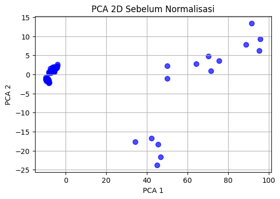
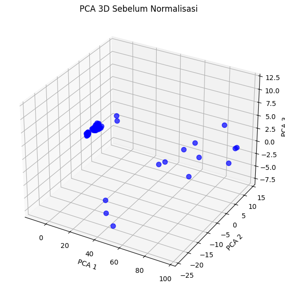
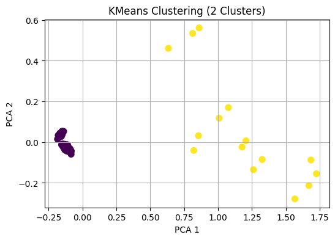
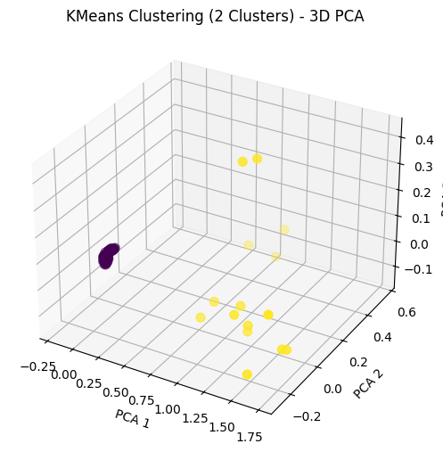
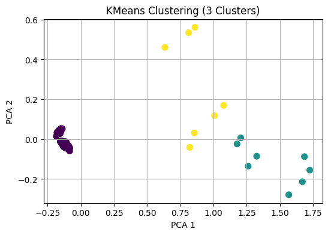
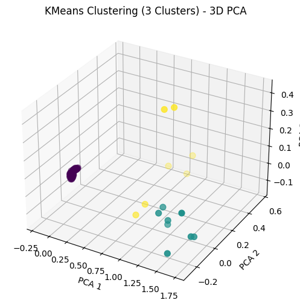
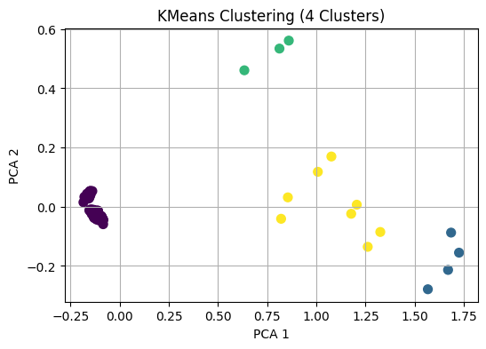

<!DOCTYPE html>


<html lang="en" data-content_root="./" >

  <head>
    <meta charset="utf-8" />
    <meta name="viewport" content="width=device-width, initial-scale=1.0" /><meta name="viewport" content="width=device-width, initial-scale=1" />

    <title>K-MEANS CLUSTER 2,3 DAN 4 &#8212; My sample book</title>
  
  
  
  <script data-cfasync="false">
    document.documentElement.dataset.mode = localStorage.getItem("mode") || "";
    document.documentElement.dataset.theme = localStorage.getItem("theme") || "";
  </script>
  
  <!-- Loaded before other Sphinx assets -->
  <link href="_static/styles/theme.css?digest=dfe6caa3a7d634c4db9b" rel="stylesheet" />
<link href="_static/styles/bootstrap.css?digest=dfe6caa3a7d634c4db9b" rel="stylesheet" />
<link href="_static/styles/pydata-sphinx-theme.css?digest=dfe6caa3a7d634c4db9b" rel="stylesheet" />

  
  <link href="_static/vendor/fontawesome/6.5.2/css/all.min.css?digest=dfe6caa3a7d634c4db9b" rel="stylesheet" />
  <link rel="preload" as="font" type="font/woff2" crossorigin href="_static/vendor/fontawesome/6.5.2/webfonts/fa-solid-900.woff2" />
<link rel="preload" as="font" type="font/woff2" crossorigin href="_static/vendor/fontawesome/6.5.2/webfonts/fa-brands-400.woff2" />
<link rel="preload" as="font" type="font/woff2" crossorigin href="_static/vendor/fontawesome/6.5.2/webfonts/fa-regular-400.woff2" />

    <link rel="stylesheet" type="text/css" href="_static/pygments.css?v=03e43079" />
    <link rel="stylesheet" type="text/css" href="_static/styles/sphinx-book-theme.css?v=eba8b062" />
    <link rel="stylesheet" type="text/css" href="_static/togglebutton.css?v=13237357" />
    <link rel="stylesheet" type="text/css" href="_static/copybutton.css?v=76b2166b" />
    <link rel="stylesheet" type="text/css" href="_static/mystnb.4510f1fc1dee50b3e5859aac5469c37c29e427902b24a333a5f9fcb2f0b3ac41.css?v=be8a1c11" />
    <link rel="stylesheet" type="text/css" href="_static/sphinx-thebe.css?v=4fa983c6" />
    <link rel="stylesheet" type="text/css" href="_static/sphinx-design.min.css?v=95c83b7e" />
  
  <!-- Pre-loaded scripts that we'll load fully later -->
  <link rel="preload" as="script" href="_static/scripts/bootstrap.js?digest=dfe6caa3a7d634c4db9b" />
<link rel="preload" as="script" href="_static/scripts/pydata-sphinx-theme.js?digest=dfe6caa3a7d634c4db9b" />
  <script src="_static/vendor/fontawesome/6.5.2/js/all.min.js?digest=dfe6caa3a7d634c4db9b"></script>

    <script src="_static/documentation_options.js?v=9eb32ce0"></script>
    <script src="_static/doctools.js?v=9a2dae69"></script>
    <script src="_static/sphinx_highlight.js?v=dc90522c"></script>
    <script src="_static/clipboard.min.js?v=a7894cd8"></script>
    <script src="_static/copybutton.js?v=f281be69"></script>
    <script src="_static/scripts/sphinx-book-theme.js?v=887ef09a"></script>
    <script>let toggleHintShow = 'Click to show';</script>
    <script>let toggleHintHide = 'Click to hide';</script>
    <script>let toggleOpenOnPrint = 'true';</script>
    <script src="_static/togglebutton.js?v=4a39c7ea"></script>
    <script>var togglebuttonSelector = '.toggle, .admonition.dropdown';</script>
    <script src="_static/design-tabs.js?v=f930bc37"></script>
    <script>const THEBE_JS_URL = "https://unpkg.com/thebe@0.8.2/lib/index.js"; const thebe_selector = ".thebe,.cell"; const thebe_selector_input = "pre"; const thebe_selector_output = ".output, .cell_output"</script>
    <script async="async" src="_static/sphinx-thebe.js?v=c100c467"></script>
    <script>var togglebuttonSelector = '.toggle, .admonition.dropdown';</script>
    <script>const THEBE_JS_URL = "https://unpkg.com/thebe@0.8.2/lib/index.js"; const thebe_selector = ".thebe,.cell"; const thebe_selector_input = "pre"; const thebe_selector_output = ".output, .cell_output"</script>
    <script>DOCUMENTATION_OPTIONS.pagename = 'K_means';</script>
    <link rel="index" title="Index" href="genindex.html" />
    <link rel="search" title="Search" href="search.html" />
    <link rel="prev" title="uts" href="UTS.html" />
  <meta name="viewport" content="width=device-width, initial-scale=1"/>
  <meta name="docsearch:language" content="en"/>
  </head>
  
  
  <body data-bs-spy="scroll" data-bs-target=".bd-toc-nav" data-offset="180" data-bs-root-margin="0px 0px -60%" data-default-mode="">

  
  
  <div id="pst-skip-link" class="skip-link d-print-none"><a href="#main-content">Skip to main content</a></div>
  
  <div id="pst-scroll-pixel-helper"></div>
  
  <button type="button" class="btn rounded-pill" id="pst-back-to-top">
    <i class="fa-solid fa-arrow-up"></i>Back to top</button>

  
  <input type="checkbox"
          class="sidebar-toggle"
          id="pst-primary-sidebar-checkbox"/>
  <label class="overlay overlay-primary" for="pst-primary-sidebar-checkbox"></label>
  
  <input type="checkbox"
          class="sidebar-toggle"
          id="pst-secondary-sidebar-checkbox"/>
  <label class="overlay overlay-secondary" for="pst-secondary-sidebar-checkbox"></label>
  
  <div class="search-button__wrapper">
    <div class="search-button__overlay"></div>
    <div class="search-button__search-container">
<form class="bd-search d-flex align-items-center"
      action="search.html"
      method="get">
  <i class="fa-solid fa-magnifying-glass"></i>
  <input type="search"
         class="form-control"
         name="q"
         id="search-input"
         placeholder="Search this book..."
         aria-label="Search this book..."
         autocomplete="off"
         autocorrect="off"
         autocapitalize="off"
         spellcheck="false"/>
  <span class="search-button__kbd-shortcut"><kbd class="kbd-shortcut__modifier">Ctrl</kbd>+<kbd>K</kbd></span>
</form></div>
  </div>

  <div class="pst-async-banner-revealer d-none">
  <aside id="bd-header-version-warning" class="d-none d-print-none" aria-label="Version warning"></aside>
</div>

  
    <header class="bd-header navbar navbar-expand-lg bd-navbar d-print-none">
    </header>
  

  <div class="bd-container">
    <div class="bd-container__inner bd-page-width">
      
      
      
      <div class="bd-sidebar-primary bd-sidebar">
        

  
  <div class="sidebar-header-items sidebar-primary__section">
    
    
    
    
  </div>
  
    <div class="sidebar-primary-items__start sidebar-primary__section">
        <div class="sidebar-primary-item">

  
    
  

<a class="navbar-brand logo" href="intro.html">
  
  
  
  
  
    
    
      
    
    
    
    <script>document.write(``);</script>
  
  
</a></div>
        <div class="sidebar-primary-item">

 <script>
 document.write(`
   <button class="btn search-button-field search-button__button" title="Search" aria-label="Search" data-bs-placement="bottom" data-bs-toggle="tooltip">
    <i class="fa-solid fa-magnifying-glass"></i>
    <span class="search-button__default-text">Search</span>
    <span class="search-button__kbd-shortcut"><kbd class="kbd-shortcut__modifier">Ctrl</kbd>+<kbd class="kbd-shortcut__modifier">K</kbd></span>
   </button>
 `);
 </script></div>
        <div class="sidebar-primary-item"><nav class="bd-links bd-docs-nav" aria-label="Main">
    <div class="bd-toc-item navbar-nav active">
        
        <ul class="nav bd-sidenav bd-sidenav__home-link">
            <li class="toctree-l1">
                <a class="reference internal" href="intro.html">
                    Welcome to Pendata (Data Mining)
                </a>
            </li>
        </ul>
        <ul class="current nav bd-sidenav">
<li class="toctree-l1"><a class="reference internal" href="UTS.html">uts</a></li>
<li class="toctree-l1 current active"><a class="current reference internal" href="#">K-MEANS CLUSTER 2,3 DAN 4</a></li>
</ul>

    </div>
</nav></div>
    </div>
  
  
  <div class="sidebar-primary-items__end sidebar-primary__section">
  </div>
  
  <div id="rtd-footer-container"></div>


      </div>
      
      <main id="main-content" class="bd-main" role="main">
        
        

<div class="sbt-scroll-pixel-helper"></div>

          <div class="bd-content">
            <div class="bd-article-container">
              
              <div class="bd-header-article d-print-none">
<div class="header-article-items header-article__inner">
  
    <div class="header-article-items__start">
      
        <div class="header-article-item"><button class="sidebar-toggle primary-toggle btn btn-sm" title="Toggle primary sidebar" data-bs-placement="bottom" data-bs-toggle="tooltip">
  <span class="fa-solid fa-bars"></span>
</button></div>
      
    </div>
  
  
    <div class="header-article-items__end">
      
        <div class="header-article-item">

<div class="article-header-buttons">


<div class="dropdown dropdown-source-buttons">
  <button class="btn dropdown-toggle" type="button" data-bs-toggle="dropdown" aria-expanded="false" aria-label="Source repositories">
    <i class="fab fa-github"></i>
  </button>
  <ul class="dropdown-menu">
      
      
      
      <li><a href="https://github.com/executablebooks/jupyter-book" target="_blank"
   class="btn btn-sm btn-source-repository-button dropdown-item"
   title="Source repository"
   data-bs-placement="left" data-bs-toggle="tooltip"
>
  

<span class="btn__icon-container">
  <i class="fab fa-github"></i>
  </span>
<span class="btn__text-container">Repository</span>
</a>
</li>
      
      
      
      
      <li><a href="https://github.com/executablebooks/jupyter-book/issues/new?title=Issue%20on%20page%20%2FK_means.html&body=Your%20issue%20content%20here." target="_blank"
   class="btn btn-sm btn-source-issues-button dropdown-item"
   title="Open an issue"
   data-bs-placement="left" data-bs-toggle="tooltip"
>
  

<span class="btn__icon-container">
  <i class="fas fa-lightbulb"></i>
  </span>
<span class="btn__text-container">Open issue</span>
</a>
</li>
      
  </ul>
</div>


<div class="dropdown dropdown-download-buttons">
  <button class="btn dropdown-toggle" type="button" data-bs-toggle="dropdown" aria-expanded="false" aria-label="Download this page">
    <i class="fas fa-download"></i>
  </button>
  <ul class="dropdown-menu">
      
      
      
      <li><a href="_sources/K_means.ipynb" target="_blank"
   class="btn btn-sm btn-download-source-button dropdown-item"
   title="Download source file"
   data-bs-placement="left" data-bs-toggle="tooltip"
>
  

<span class="btn__icon-container">
  <i class="fas fa-file"></i>
  </span>
<span class="btn__text-container">.ipynb</span>
</a>
</li>
      
      
      
      
      <li>
<button onclick="window.print()"
  class="btn btn-sm btn-download-pdf-button dropdown-item"
  title="Print to PDF"
  data-bs-placement="left" data-bs-toggle="tooltip"
>
  

<span class="btn__icon-container">
  <i class="fas fa-file-pdf"></i>
  </span>
<span class="btn__text-container">.pdf</span>
</button>
</li>
      
  </ul>
</div>


<button onclick="toggleFullScreen()"
  class="btn btn-sm btn-fullscreen-button"
  title="Fullscreen mode"
  data-bs-placement="bottom" data-bs-toggle="tooltip"
>
  

<span class="btn__icon-container">
  <i class="fas fa-expand"></i>
  </span>

</button>


<script>
document.write(`
  <button class="btn btn-sm nav-link pst-navbar-icon theme-switch-button" title="light/dark" aria-label="light/dark" data-bs-placement="bottom" data-bs-toggle="tooltip">
    <i class="theme-switch fa-solid fa-sun fa-lg" data-mode="light"></i>
    <i class="theme-switch fa-solid fa-moon fa-lg" data-mode="dark"></i>
    <i class="theme-switch fa-solid fa-circle-half-stroke fa-lg" data-mode="auto"></i>
  </button>
`);
</script>


<script>
document.write(`
  <button class="btn btn-sm pst-navbar-icon search-button search-button__button" title="Search" aria-label="Search" data-bs-placement="bottom" data-bs-toggle="tooltip">
    <i class="fa-solid fa-magnifying-glass fa-lg"></i>
  </button>
`);
</script>
<button class="sidebar-toggle secondary-toggle btn btn-sm" title="Toggle secondary sidebar" data-bs-placement="bottom" data-bs-toggle="tooltip">
    <span class="fa-solid fa-list"></span>
</button>
</div></div>
      
    </div>
  
</div>
</div>
              
              

<div id="jb-print-docs-body" class="onlyprint">
    <h1>K-MEANS CLUSTER 2,3 DAN 4</h1>
    <!-- Table of contents -->
    <div id="print-main-content">
        <div id="jb-print-toc">
            
            <div>
                <h2> Contents </h2>
            </div>
            <nav aria-label="Page">
                <ul class="visible nav section-nav flex-column">
<li class="toc-h2 nav-item toc-entry"><a class="reference internal nav-link" href="#bagian-awal-ambil-dan-gabungkan-data">Bagian Awal: Ambil dan Gabungkan Data</a></li>
<li class="toc-h2 nav-item toc-entry"><a class="reference internal nav-link" href="#data-asli-sebelum-di-normalisasi">data asli sebelum di normalisasi</a></li>
<li class="toc-h2 nav-item toc-entry"><a class="reference internal nav-link" href="#visualisasi-data-asli">Visualisasi data asli</a></li>
<li class="toc-h2 nav-item toc-entry"><a class="reference internal nav-link" href="#preprocessing-dan-reduksi-dimensi">Preprocessing dan Reduksi Dimensi</a></li>
<li class="toc-h2 nav-item toc-entry"><a class="reference internal nav-link" href="#clustering-2-cluster">Clustering (2 Cluster)</a></li>
<li class="toc-h2 nav-item toc-entry"><a class="reference internal nav-link" href="#clustering-3-cluster">Clustering  (3 Cluster)</a></li>
<li class="toc-h2 nav-item toc-entry"><a class="reference internal nav-link" href="#clustering-4-cluster">Clustering (4 Cluster)</a></li>
</ul>
            </nav>
        </div>
    </div>
</div>

              
                
<div id="searchbox"></div>
                <article class="bd-article">
                  
  <section class="tex2jax_ignore mathjax_ignore" id="k-means-cluster-2-3-dan-4">
<h1>K-MEANS CLUSTER 2,3 DAN 4<a class="headerlink" href="#k-means-cluster-2-3-dan-4" title="Link to this heading">#</a></h1>
<div class="cell docutils container">
<div class="cell_input docutils container">
<div class="highlight-ipython3 notranslate"><div class="highlight"><pre><span></span><span class="o">%</span><span class="k">pip</span> install pymysql
<span class="o">%</span><span class="k">pip</span> install psycopg2
</pre></div>
</div>
</div>
<div class="cell_output docutils container">
<div class="output stream highlight-myst-ansi notranslate"><div class="highlight"><pre><span></span>Collecting pymysql
  Downloading PyMySQL-1.1.1-py3-none-any.whl.metadata (4.4 kB)
Downloading PyMySQL-1.1.1-py3-none-any.whl (44 kB)
</pre></div>
</div>
<div class="output stream highlight-myst-ansi notranslate"><div class="highlight"><pre><span></span>Installing collected packages: pymysql
</pre></div>
</div>
<div class="output stream highlight-myst-ansi notranslate"><div class="highlight"><pre><span></span>Successfully installed pymysql-1.1.1
</pre></div>
</div>
<div class="output stream highlight-myst-ansi notranslate"><div class="highlight"><pre><span></span><span class=" -Color -Color-Bold">[</span><span class=" -Color -Color-Blue">notice</span><span class=" -Color -Color-Bold">]</span> A new release of pip is available: <span class=" -Color -Color-Red">25.0.1</span> -&gt; <span class=" -Color -Color-Green">25.1.1</span>
<span class=" -Color -Color-Bold">[</span><span class=" -Color -Color-Blue">notice</span><span class=" -Color -Color-Bold">]</span> To update, run: <span class=" -Color -Color-Green">python3 -m pip install --upgrade pip</span>
</pre></div>
</div>
<div class="output stream highlight-myst-ansi notranslate"><div class="highlight"><pre><span></span>Note: you may need to restart the kernel to use updated packages.
</pre></div>
</div>
<div class="output stream highlight-myst-ansi notranslate"><div class="highlight"><pre><span></span>Collecting psycopg2
  Downloading psycopg2-2.9.10.tar.gz (385 kB)
</pre></div>
</div>
<div class="output stream highlight-myst-ansi notranslate"><div class="highlight"><pre><span></span>  Preparing metadata (setup.py) ... ?25l-
</pre></div>
</div>
<div class="output stream highlight-myst-ansi notranslate"><div class="highlight"><pre><span></span> \ done
?25hBuilding wheels for collected packages: psycopg2
</pre></div>
</div>
<div class="output stream highlight-myst-ansi notranslate"><div class="highlight"><pre><span></span>  Building wheel for psycopg2 (setup.py) ... ?25l-
</pre></div>
</div>
<div class="output stream highlight-myst-ansi notranslate"><div class="highlight"><pre><span></span> \
</pre></div>
</div>
<div class="output stream highlight-myst-ansi notranslate"><div class="highlight"><pre><span></span> |
</pre></div>
</div>
<div class="output stream highlight-myst-ansi notranslate"><div class="highlight"><pre><span></span> /
</pre></div>
</div>
<div class="output stream highlight-myst-ansi notranslate"><div class="highlight"><pre><span></span> -
</pre></div>
</div>
<div class="output stream highlight-myst-ansi notranslate"><div class="highlight"><pre><span></span> \
</pre></div>
</div>
<div class="output stream highlight-myst-ansi notranslate"><div class="highlight"><pre><span></span> |
</pre></div>
</div>
<div class="output stream highlight-myst-ansi notranslate"><div class="highlight"><pre><span></span> /
</pre></div>
</div>
<div class="output stream highlight-myst-ansi notranslate"><div class="highlight"><pre><span></span> -
</pre></div>
</div>
<div class="output stream highlight-myst-ansi notranslate"><div class="highlight"><pre><span></span> \
</pre></div>
</div>
<div class="output stream highlight-myst-ansi notranslate"><div class="highlight"><pre><span></span> |
</pre></div>
</div>
<div class="output stream highlight-myst-ansi notranslate"><div class="highlight"><pre><span></span> /
</pre></div>
</div>
<div class="output stream highlight-myst-ansi notranslate"><div class="highlight"><pre><span></span> -
</pre></div>
</div>
<div class="output stream highlight-myst-ansi notranslate"><div class="highlight"><pre><span></span> \
</pre></div>
</div>
<div class="output stream highlight-myst-ansi notranslate"><div class="highlight"><pre><span></span> |
</pre></div>
</div>
<div class="output stream highlight-myst-ansi notranslate"><div class="highlight"><pre><span></span> /
</pre></div>
</div>
<div class="output stream highlight-myst-ansi notranslate"><div class="highlight"><pre><span></span> -
</pre></div>
</div>
<div class="output stream highlight-myst-ansi notranslate"><div class="highlight"><pre><span></span> \
</pre></div>
</div>
<div class="output stream highlight-myst-ansi notranslate"><div class="highlight"><pre><span></span> |
</pre></div>
</div>
<div class="output stream highlight-myst-ansi notranslate"><div class="highlight"><pre><span></span> /
</pre></div>
</div>
<div class="output stream highlight-myst-ansi notranslate"><div class="highlight"><pre><span></span> -
</pre></div>
</div>
<div class="output stream highlight-myst-ansi notranslate"><div class="highlight"><pre><span></span> \
</pre></div>
</div>
<div class="output stream highlight-myst-ansi notranslate"><div class="highlight"><pre><span></span> |
</pre></div>
</div>
<div class="output stream highlight-myst-ansi notranslate"><div class="highlight"><pre><span></span> /
</pre></div>
</div>
<div class="output stream highlight-myst-ansi notranslate"><div class="highlight"><pre><span></span> -
</pre></div>
</div>
<div class="output stream highlight-myst-ansi notranslate"><div class="highlight"><pre><span></span> \
</pre></div>
</div>
<div class="output stream highlight-myst-ansi notranslate"><div class="highlight"><pre><span></span> |
</pre></div>
</div>
<div class="output stream highlight-myst-ansi notranslate"><div class="highlight"><pre><span></span> /
</pre></div>
</div>
<div class="output stream highlight-myst-ansi notranslate"><div class="highlight"><pre><span></span> -
</pre></div>
</div>
<div class="output stream highlight-myst-ansi notranslate"><div class="highlight"><pre><span></span> \
</pre></div>
</div>
<div class="output stream highlight-myst-ansi notranslate"><div class="highlight"><pre><span></span> |
</pre></div>
</div>
<div class="output stream highlight-myst-ansi notranslate"><div class="highlight"><pre><span></span> /
</pre></div>
</div>
<div class="output stream highlight-myst-ansi notranslate"><div class="highlight"><pre><span></span> -
</pre></div>
</div>
<div class="output stream highlight-myst-ansi notranslate"><div class="highlight"><pre><span></span> \
</pre></div>
</div>
<div class="output stream highlight-myst-ansi notranslate"><div class="highlight"><pre><span></span> |
</pre></div>
</div>
<div class="output stream highlight-myst-ansi notranslate"><div class="highlight"><pre><span></span> /
</pre></div>
</div>
<div class="output stream highlight-myst-ansi notranslate"><div class="highlight"><pre><span></span> - done
?25h  Created wheel for psycopg2: filename=psycopg2-2.9.10-cp312-cp312-linux_x86_64.whl size=635678 sha256=1a6614a9d8a6cd6110aee9b4ff2db1184b222187e07c63d1ecffd6f73af9ece1
  Stored in directory: /home/codespace/.cache/pip/wheels/ac/bb/ce/afa589c50b6004d3a06fc691e71bd09c9bd5f01e5921e5329b
Successfully built psycopg2
</pre></div>
</div>
<div class="output stream highlight-myst-ansi notranslate"><div class="highlight"><pre><span></span>Installing collected packages: psycopg2
</pre></div>
</div>
<div class="output stream highlight-myst-ansi notranslate"><div class="highlight"><pre><span></span>Successfully installed psycopg2-2.9.10

<span class=" -Color -Color-Bold">[</span><span class=" -Color -Color-Blue">notice</span><span class=" -Color -Color-Bold">]</span> A new release of pip is available: <span class=" -Color -Color-Red">25.0.1</span> -&gt; <span class=" -Color -Color-Green">25.1.1</span>
<span class=" -Color -Color-Bold">[</span><span class=" -Color -Color-Blue">notice</span><span class=" -Color -Color-Bold">]</span> To update, run: <span class=" -Color -Color-Green">python3 -m pip install --upgrade pip</span>
</pre></div>
</div>
<div class="output stream highlight-myst-ansi notranslate"><div class="highlight"><pre><span></span>Note: you may need to restart the kernel to use updated packages.
</pre></div>
</div>
</div>
</div>
<section id="bagian-awal-ambil-dan-gabungkan-data">
<h2>Bagian Awal: Ambil dan Gabungkan Data<a class="headerlink" href="#bagian-awal-ambil-dan-gabungkan-data" title="Link to this heading">#</a></h2>
<p>Kode Python ini terhubung ke dua database berbeda—PostgreSQL dan MySQL—menggunakan pustaka psycopg2 dan pymysql, lalu mengambil data dari tabel sepaliris (PostgreSQL) dan petaliris (MySQL). Data dari kedua tabel tersebut dimuat ke dalam DataFrame menggunakan pandas, kemudian digabungkan berdasarkan kolom id dan class dengan metode inner join, yang berarti hanya data yang memiliki kecocokan di kedua tabel pada kolom tersebut yang akan disertakan. Setelah penggabungan, hasil akhir ditampilkan di konsol tanpa menampilkan indeks baris. Kode ini memungkinkan analisis gabungan data kelopak dan sepal dari dua sumber database yang berbeda.</p>
<div class="cell docutils container">
<div class="cell_input docutils container">
<div class="highlight-ipython3 notranslate"><div class="highlight"><pre><span></span><span class="kn">import</span><span class="w"> </span><span class="nn">psycopg2</span>
<span class="kn">import</span><span class="w"> </span><span class="nn">pymysql</span>
<span class="kn">import</span><span class="w"> </span><span class="nn">numpy</span><span class="w"> </span><span class="k">as</span><span class="w"> </span><span class="nn">np</span>
<span class="kn">import</span><span class="w"> </span><span class="nn">pandas</span><span class="w"> </span><span class="k">as</span><span class="w"> </span><span class="nn">pd</span>

<span class="k">def</span><span class="w"> </span><span class="nf">get_pg_data</span><span class="p">():</span>
    <span class="n">conn</span> <span class="o">=</span> <span class="n">psycopg2</span><span class="o">.</span><span class="n">connect</span><span class="p">(</span>
        <span class="n">host</span><span class="o">=</span><span class="s2">&quot;postgre-mysqliris.g.aivencloud.com&quot;</span><span class="p">,</span>
        <span class="n">user</span><span class="o">=</span><span class="s2">&quot;avnadmin&quot;</span><span class="p">,</span>
        <span class="n">password</span><span class="o">=</span><span class="s2">&quot;AVNS_ldSz_mZZNFskZEWcZsJ&quot;</span><span class="p">,</span>
        <span class="n">database</span><span class="o">=</span><span class="s2">&quot;defaultdb&quot;</span><span class="p">,</span>
        <span class="n">port</span><span class="o">=</span><span class="mi">10378</span>
    <span class="p">)</span>
    <span class="n">cursor</span> <span class="o">=</span> <span class="n">conn</span><span class="o">.</span><span class="n">cursor</span><span class="p">()</span>
    <span class="n">cursor</span><span class="o">.</span><span class="n">execute</span><span class="p">(</span><span class="s2">&quot;SELECT * FROM sepaliris&quot;</span><span class="p">)</span>
    <span class="n">data</span> <span class="o">=</span> <span class="n">cursor</span><span class="o">.</span><span class="n">fetchall</span><span class="p">()</span>
    <span class="n">columns</span> <span class="o">=</span> <span class="p">[</span><span class="n">desc</span><span class="p">[</span><span class="mi">0</span><span class="p">]</span> <span class="k">for</span> <span class="n">desc</span> <span class="ow">in</span> <span class="n">cursor</span><span class="o">.</span><span class="n">description</span><span class="p">]</span>  <span class="c1"># Ambil nama kolom</span>
    <span class="n">cursor</span><span class="o">.</span><span class="n">close</span><span class="p">()</span>
    <span class="n">conn</span><span class="o">.</span><span class="n">close</span><span class="p">()</span>

    <span class="k">return</span> <span class="n">pd</span><span class="o">.</span><span class="n">DataFrame</span><span class="p">(</span><span class="n">data</span><span class="p">,</span> <span class="n">columns</span><span class="o">=</span><span class="n">columns</span><span class="p">)</span>

<span class="k">def</span><span class="w"> </span><span class="nf">get_mysql_data</span><span class="p">():</span>
    <span class="n">conn</span> <span class="o">=</span> <span class="n">pymysql</span><span class="o">.</span><span class="n">connect</span><span class="p">(</span>
        <span class="n">host</span><span class="o">=</span><span class="s2">&quot;mysql-37a70601-mysqliris.i.aivencloud.com&quot;</span><span class="p">,</span>
        <span class="n">user</span><span class="o">=</span><span class="s2">&quot;avnadmin&quot;</span><span class="p">,</span>
        <span class="n">password</span><span class="o">=</span><span class="s2">&quot;AVNS_3JRmZQG_Bul1_r-Rhl6&quot;</span><span class="p">,</span>
        <span class="n">database</span><span class="o">=</span><span class="s2">&quot;petal&quot;</span><span class="p">,</span>
        <span class="n">port</span><span class="o">=</span><span class="mi">10378</span>
    <span class="p">)</span>
    <span class="n">cursor</span> <span class="o">=</span> <span class="n">conn</span><span class="o">.</span><span class="n">cursor</span><span class="p">()</span>
    <span class="n">cursor</span><span class="o">.</span><span class="n">execute</span><span class="p">(</span><span class="s2">&quot;SELECT * FROM petaliris&quot;</span><span class="p">)</span>
    <span class="n">data</span> <span class="o">=</span> <span class="n">cursor</span><span class="o">.</span><span class="n">fetchall</span><span class="p">()</span>
    <span class="n">columns</span> <span class="o">=</span> <span class="p">[</span><span class="n">desc</span><span class="p">[</span><span class="mi">0</span><span class="p">]</span> <span class="k">for</span> <span class="n">desc</span> <span class="ow">in</span> <span class="n">cursor</span><span class="o">.</span><span class="n">description</span><span class="p">]</span>  <span class="c1"># Ambil nama kolom</span>
    <span class="n">cursor</span><span class="o">.</span><span class="n">close</span><span class="p">()</span>
    <span class="n">conn</span><span class="o">.</span><span class="n">close</span><span class="p">()</span>

    <span class="k">return</span> <span class="n">pd</span><span class="o">.</span><span class="n">DataFrame</span><span class="p">(</span><span class="n">data</span><span class="p">,</span> <span class="n">columns</span><span class="o">=</span><span class="n">columns</span><span class="p">)</span>

<span class="c1"># Ambil data dari kedua database</span>
<span class="n">df_postgresql</span> <span class="o">=</span> <span class="n">get_pg_data</span><span class="p">()</span>
<span class="n">df_mysql</span> <span class="o">=</span> <span class="n">get_mysql_data</span><span class="p">()</span>

<span class="c1"># Gabungkan berdasarkan kolom &#39;id&#39; dan &#39;Class&#39;</span>
<span class="n">df_merged</span> <span class="o">=</span> <span class="n">pd</span><span class="o">.</span><span class="n">merge</span><span class="p">(</span><span class="n">df_mysql</span><span class="p">,</span> <span class="n">df_postgresql</span><span class="p">,</span> <span class="n">on</span><span class="o">=</span><span class="p">[</span><span class="s2">&quot;id&quot;</span><span class="p">,</span> <span class="s2">&quot;class&quot;</span><span class="p">],</span> <span class="n">how</span><span class="o">=</span><span class="s2">&quot;inner&quot;</span><span class="p">)</span>

<span class="c1"># Cetak semua data hasil gabungan tanpa indeks</span>
<span class="nb">print</span><span class="p">(</span><span class="n">df_merged</span><span class="o">.</span><span class="n">to_string</span><span class="p">(</span><span class="n">index</span><span class="o">=</span><span class="kc">False</span><span class="p">))</span>
</pre></div>
</div>
</div>
<div class="cell_output docutils container">
<div class="output stream highlight-myst-ansi notranslate"><div class="highlight"><pre><span></span> id           class  petal_length  petal_width  sepal_length  sepal_width
  1     Iris-setosa           1.4          0.2           5.1          3.5
  2     Iris-setosa          14.0          2.0          40.9         30.0
  3     Iris-setosa           1.3          0.2           4.7          3.2
  4     Iris-setosa          15.0         20.0          46.0         31.0
  5     Iris-setosa           1.4          0.2           5.0          3.6
  6     Iris-setosa           1.7          0.4           5.4          3.9
  7     Iris-setosa           1.4          0.3           4.6          3.4
  8     Iris-setosa           1.5          0.2           5.0          3.4
  9     Iris-setosa           1.4          0.2           4.4          2.9
 10     Iris-setosa           1.5          0.1           4.9          3.1
 11     Iris-setosa           1.5          0.2           5.4          3.7
 12     Iris-setosa          16.0         20.0          48.0         34.0
 13     Iris-setosa           1.4          0.1           4.8          3.0
 14     Iris-setosa           1.1          0.1           4.3          3.0
 15     Iris-setosa           1.2          0.2           5.8          4.0
 16     Iris-setosa           1.5          0.4           5.7          4.4
 17     Iris-setosa           1.3          0.4           5.4          3.9
 18     Iris-setosa           1.4          0.3           5.1          3.5
 19     Iris-setosa           1.7          0.3           5.7          3.8
 20     Iris-setosa           1.5          0.3           5.1          3.8
 21     Iris-setosa          17.0          2.0          54.0         34.0
 22     Iris-setosa          15.0          4.0          51.0         37.0
 23     Iris-setosa           1.0          0.2           4.6          3.6
 24     Iris-setosa           1.7          0.5           5.1          3.3
 25     Iris-setosa           1.9          0.2           4.8          3.4
 26     Iris-setosa           1.6          0.2           5.0          3.0
 27     Iris-setosa           1.6          0.4           5.0          3.4
 28     Iris-setosa           1.5          0.2           5.2          3.5
 29     Iris-setosa           1.4          0.2           5.2          3.4
 30     Iris-setosa           1.6          0.2           4.7          3.2
 31     Iris-setosa           1.6          0.2           4.8          3.1
 32     Iris-setosa           1.5          0.4           5.4          3.4
 33     Iris-setosa           1.5          0.1           5.2          4.1
 34     Iris-setosa           1.4          0.2           5.5          4.2
 35     Iris-setosa           1.5          0.1           4.9          3.1
 36     Iris-setosa           1.2          0.2           5.0          3.2
 37     Iris-setosa           1.3          0.2           5.5          3.5
 38     Iris-setosa           1.5          0.1           4.9          3.1
 39     Iris-setosa           1.3          0.2           4.4          3.0
 40     Iris-setosa           1.5          0.2           5.1          3.4
 41     Iris-setosa           1.3          0.3           5.0          3.5
 42     Iris-setosa           1.3          0.3           4.5          2.3
 43     Iris-setosa           1.3          0.2           4.4          3.2
 44     Iris-setosa           1.6          0.6           5.0          3.5
 45     Iris-setosa           1.9          0.4           5.1          3.8
 46     Iris-setosa           1.4          0.3           4.8          3.0
 47     Iris-setosa           1.6          0.2           5.1          3.8
 48     Iris-setosa           1.4          0.2           4.6          3.2
 49     Iris-setosa           1.5          0.2           5.3          3.7
 50     Iris-setosa           1.4          0.2           5.0          3.3
 51 Iris-versicolor           4.7          1.4           7.0          3.2
 52 Iris-versicolor           4.5          1.5           6.4          3.2
 53 Iris-versicolor           4.9          1.5           6.9          3.1
 54 Iris-versicolor           4.0          1.3           5.5          2.3
 55 Iris-versicolor           4.6          1.5           6.5          2.8
 56 Iris-versicolor           4.5          1.3           5.7          2.8
 57 Iris-versicolor           4.7          1.6           6.3          3.3
 58 Iris-versicolor           3.3          1.0           4.9          2.4
 59 Iris-versicolor          46.0         13.0          66.0         29.0
 60 Iris-versicolor           3.9          1.4           5.2          2.7
 61 Iris-versicolor          35.0         10.0          50.0         20.0
 62 Iris-versicolor           4.2          1.5           5.9          3.0
 63 Iris-versicolor           4.0          1.0           6.0          2.2
 64 Iris-versicolor           4.7          1.4           6.1          2.9
 65 Iris-versicolor           3.6          1.3           5.6          2.9
 66 Iris-versicolor           4.4          1.4           6.7          3.1
 67 Iris-versicolor          45.0         15.0          56.0         30.0
 68 Iris-versicolor           4.1          1.0           5.8          2.7
 69 Iris-versicolor           4.5          1.5           6.2          2.2
 70 Iris-versicolor           3.9          1.1           5.6          2.5
 71 Iris-versicolor           4.8          1.8           5.9          3.2
 72 Iris-versicolor           4.0          1.3           6.1          2.8
 73 Iris-versicolor           4.9          1.5           6.3          2.5
 74 Iris-versicolor           4.7          1.2           6.1          2.8
 75 Iris-versicolor           4.3          1.3           6.4          2.9
 76 Iris-versicolor           4.4          1.4           6.6          3.0
 77 Iris-versicolor           4.8          1.4           6.8          2.8
 78 Iris-versicolor          50.0         17.0          67.0         30.0
 79 Iris-versicolor           4.5          1.5           6.0          2.9
 80 Iris-versicolor           3.5          1.0           5.7          2.6
 81 Iris-versicolor           3.8          1.1           5.5          2.4
 82 Iris-versicolor           3.7          1.0           5.5          2.4
 83 Iris-versicolor           3.9          1.2           5.8          2.7
 84 Iris-versicolor           5.1          1.6           6.0          2.7
 85 Iris-versicolor           4.5          1.5           5.4          3.0
 86 Iris-versicolor           4.5          1.6           6.0          3.4
 87 Iris-versicolor           4.7          1.5           6.7          3.1
 88 Iris-versicolor           4.4          1.3           6.3          2.3
 89 Iris-versicolor           4.1          1.3           5.6          3.0
 90 Iris-versicolor           4.0          1.3           5.5          2.5
 91 Iris-versicolor           4.4          1.2           5.5          2.6
 92 Iris-versicolor           4.6          1.4           6.1          3.0
 93 Iris-versicolor           4.0          1.2           5.8          2.6
 94 Iris-versicolor          33.0         10.0          50.0         23.0
 95 Iris-versicolor           4.2          1.3           5.6          2.7
 96 Iris-versicolor           4.2          1.2           5.7          3.0
 97 Iris-versicolor           4.2          1.3           5.7          2.9
 98 Iris-versicolor           4.3          1.3           6.2          2.9
 99 Iris-versicolor           3.0          1.1           5.1          2.5
100 Iris-versicolor           4.1          1.3           5.7          2.8
101  Iris-virginica           6.0          2.5           6.3          3.3
102  Iris-virginica           5.1          1.9           5.8          2.7
103  Iris-virginica           5.9          2.1           7.1          3.0
104  Iris-virginica           5.6          1.8           6.3          2.9
105  Iris-virginica           5.8          2.2           6.5          3.0
106  Iris-virginica          66.0         21.0          76.0         30.0
107  Iris-virginica           4.5          1.7           4.9          2.5
108  Iris-virginica           6.3          1.8           7.3          2.9
109  Iris-virginica           5.8          1.8           6.7          2.5
110  Iris-virginica          61.0         25.0          72.0         36.0
111  Iris-virginica           5.1          2.0           6.5          3.2
112  Iris-virginica           5.3          1.9           6.4          2.7
113  Iris-virginica           5.5          2.1           6.8          3.0
114  Iris-virginica           5.0          2.0           5.7          2.5
115  Iris-virginica           5.1          2.4           5.8          2.8
116  Iris-virginica           5.3          2.3           6.4          3.2
117  Iris-virginica           5.5          1.8           6.5          3.0
118  Iris-virginica          67.0         22.0          77.0         38.0
119  Iris-virginica           6.9          2.3           7.7          2.6
120  Iris-virginica           5.0          1.5           6.0          2.2
121  Iris-virginica           5.7          2.3           6.9          3.2
122  Iris-virginica           4.9          2.0           5.6          2.8
123  Iris-virginica           6.7          2.0           7.7          2.8
124  Iris-virginica           4.9          1.8           6.3          2.7
125  Iris-virginica           5.7          2.1           6.7          3.3
126  Iris-virginica           6.0          1.8           7.2          3.2
127  Iris-virginica          48.0         18.0          62.0         28.0
128  Iris-virginica           4.9          1.8           6.1          3.0
129  Iris-virginica           5.6          2.1           6.4          2.8
130  Iris-virginica           5.8          1.6           7.2          3.0
131  Iris-virginica           6.1          1.9           7.4          2.8
132  Iris-virginica          64.0         20.0          79.0         38.0
133  Iris-virginica           5.6          2.2           6.4          2.8
134  Iris-virginica           5.1          1.5           6.3          2.8
135  Iris-virginica           5.6          1.4           6.1          2.6
136  Iris-virginica           6.1          2.3           7.7          3.0
137  Iris-virginica           5.6          2.4           6.3          3.4
138  Iris-virginica           5.5          1.8           6.4          3.1
139  Iris-virginica           4.8          1.8           6.0          3.0
140  Iris-virginica           5.4          2.1           6.9          3.1
141  Iris-virginica           5.6          2.4           6.7          3.1
142  Iris-virginica           5.1          2.3           6.9          3.1
143  Iris-virginica           5.1          1.9           5.8          2.7
144  Iris-virginica           5.9          2.3           6.8          3.2
145  Iris-virginica           5.7          2.5           6.7          3.3
146  Iris-virginica           5.2          2.3           6.7          3.0
147  Iris-virginica           5.0          1.9           6.3          2.5
148  Iris-virginica           5.2          2.0           6.5          3.0
149  Iris-virginica           5.4          2.3           6.2          3.4
150  Iris-virginica           5.1          1.8           5.9          3.0
</pre></div>
</div>
</div>
</div>
</section>
<section id="data-asli-sebelum-di-normalisasi">
<h2>data asli sebelum di normalisasi<a class="headerlink" href="#data-asli-sebelum-di-normalisasi" title="Link to this heading">#</a></h2>
<p>Kode tersebut menggunakan pustaka matplotlib.pyplot dan mengambil data numerik dari DataFrame df_merged dengan cara menghapus kolom non-numerik yaitu ‘id’ dan ‘class’, kemudian mencetak hasilnya ke layar menggunakan print. Langkah ini biasanya dilakukan sebagai persiapan sebelum analisis lebih lanjut seperti normalisasi, reduksi dimensi, atau visualisasi data, karena hanya fitur numerik yang bisa diproses oleh algoritma tersebut.</p>
<div class="cell docutils container">
<div class="cell_input docutils container">
<div class="highlight-ipython3 notranslate"><div class="highlight"><pre><span></span><span class="kn">import</span><span class="w"> </span><span class="nn">matplotlib.pyplot</span><span class="w"> </span><span class="k">as</span><span class="w"> </span><span class="nn">plt</span>

<span class="c1"># Ambil hanya fitur numerik (hapus kolom non-numerik)</span>
<span class="n">features_before_scaling</span> <span class="o">=</span> <span class="n">df_merged</span><span class="o">.</span><span class="n">drop</span><span class="p">(</span><span class="n">columns</span><span class="o">=</span><span class="p">[</span><span class="s1">&#39;id&#39;</span><span class="p">,</span> <span class="s1">&#39;class&#39;</span><span class="p">])</span>

<span class="nb">print</span> <span class="p">(</span><span class="n">features_before_scaling</span><span class="p">);</span>
</pre></div>
</div>
</div>
<div class="cell_output docutils container">
<div class="output stream highlight-myst-ansi notranslate"><div class="highlight"><pre><span></span>     petal_length  petal_width  sepal_length  sepal_width
0             1.4          0.2           5.1          3.5
1            14.0          2.0          40.9         30.0
2             1.3          0.2           4.7          3.2
3            15.0         20.0          46.0         31.0
4             1.4          0.2           5.0          3.6
..            ...          ...           ...          ...
145           5.2          2.3           6.7          3.0
146           5.0          1.9           6.3          2.5
147           5.2          2.0           6.5          3.0
148           5.4          2.3           6.2          3.4
149           5.1          1.8           5.9          3.0

[150 rows x 4 columns]
</pre></div>
</div>
</div>
</div>
</section>
<section id="visualisasi-data-asli">
<h2>Visualisasi data asli<a class="headerlink" href="#visualisasi-data-asli" title="Link to this heading">#</a></h2>
<p>Kode tersebut melakukan visualisasi data menggunakan Principal Component Analysis (PCA) tanpa proses normalisasi terlebih dahulu. Pertama, kode menghapus kolom non-numerik seperti ‘id’ dan ‘class’ dari DataFrame df_merged, karena PCA hanya dapat diterapkan pada data numerik. Kemudian, PCA diterapkan untuk mereduksi dimensi data ke dua komponen utama (n_components=2), sehingga menghasilkan representasi dua dimensi dari data asli. Hasil reduksi ini disimpan dalam reduced_raw dan divisualisasikan menggunakan scatter plot, di mana setiap titik berwarna biru merepresentasikan satu sampel data dalam ruang dua dimensi PCA. Visualisasi ini membantu memahami struktur dan distribusi data mentah sebelum dilakukan normalisasi.</p>
<div class="cell docutils container">
<div class="cell_input docutils container">
<div class="highlight-ipython3 notranslate"><div class="highlight"><pre><span></span><span class="kn">import</span><span class="w"> </span><span class="nn">matplotlib.pyplot</span><span class="w"> </span><span class="k">as</span><span class="w"> </span><span class="nn">plt</span>
<span class="kn">from</span><span class="w"> </span><span class="nn">sklearn.decomposition</span><span class="w"> </span><span class="kn">import</span> <span class="n">PCA</span>

<span class="c1"># Ambil hanya fitur numerik (hapus kolom non-numerik)</span>
<span class="n">features_before_scaling</span> <span class="o">=</span> <span class="n">df_merged</span><span class="o">.</span><span class="n">drop</span><span class="p">(</span><span class="n">columns</span><span class="o">=</span><span class="p">[</span><span class="s1">&#39;id&#39;</span><span class="p">,</span> <span class="s1">&#39;class&#39;</span><span class="p">])</span>


<span class="c1"># PCA langsung pada data mentah (belum dinormalisasi)</span>
<span class="n">pca_raw</span> <span class="o">=</span> <span class="n">PCA</span><span class="p">(</span><span class="n">n_components</span><span class="o">=</span><span class="mi">2</span><span class="p">)</span>
<span class="n">reduced_raw</span> <span class="o">=</span> <span class="n">pca_raw</span><span class="o">.</span><span class="n">fit_transform</span><span class="p">(</span><span class="n">features_before_scaling</span><span class="p">)</span>

<span class="c1"># Visualisasi 2D hasil PCA sebelum normalisasi</span>
<span class="n">plt</span><span class="o">.</span><span class="n">figure</span><span class="p">(</span><span class="n">figsize</span><span class="o">=</span><span class="p">(</span><span class="mi">6</span><span class="p">,</span> <span class="mi">4</span><span class="p">))</span>
<span class="n">plt</span><span class="o">.</span><span class="n">scatter</span><span class="p">(</span><span class="n">reduced_raw</span><span class="p">[:,</span> <span class="mi">0</span><span class="p">],</span> <span class="n">reduced_raw</span><span class="p">[:,</span> <span class="mi">1</span><span class="p">],</span> <span class="n">c</span><span class="o">=</span><span class="s1">&#39;blue&#39;</span><span class="p">,</span> <span class="n">s</span><span class="o">=</span><span class="mi">50</span><span class="p">,</span> <span class="n">alpha</span><span class="o">=</span><span class="mf">0.7</span><span class="p">)</span>
<span class="n">plt</span><span class="o">.</span><span class="n">title</span><span class="p">(</span><span class="s2">&quot;PCA 2D Sebelum Normalisasi&quot;</span><span class="p">)</span>
<span class="n">plt</span><span class="o">.</span><span class="n">xlabel</span><span class="p">(</span><span class="s2">&quot;PCA 1&quot;</span><span class="p">)</span>
<span class="n">plt</span><span class="o">.</span><span class="n">ylabel</span><span class="p">(</span><span class="s2">&quot;PCA 2&quot;</span><span class="p">)</span>
<span class="n">plt</span><span class="o">.</span><span class="n">grid</span><span class="p">(</span><span class="kc">True</span><span class="p">)</span>
<span class="n">plt</span><span class="o">.</span><span class="n">show</span><span class="p">()</span>
</pre></div>
</div>
</div>
<div class="cell_output docutils container">

</div>
</div>
<p>Kode ini melakukan visualisasi data dalam ruang 3 dimensi menggunakan PCA (Principal Component Analysis) tanpa proses normalisasi sebelumnya. Pertama, data numerik dipilih dengan menghapus kolom non-numerik seperti id dan class dari DataFrame df_merged. Kemudian, PCA diterapkan untuk mereduksi dimensi data menjadi tiga komponen utama. Hasil reduksi ini divisualisasikan dalam grafik scatter 3D menggunakan matplotlib, dengan titik-titik berwarna biru yang merepresentasikan distribusi data dalam ruang PCA. Visualisasi ini membantu untuk memahami pola dan struktur data dalam dimensi yang lebih rendah sebelum proses normalisasi dilakukan.</p>
<div class="cell docutils container">
<div class="cell_input docutils container">
<div class="highlight-ipython3 notranslate"><div class="highlight"><pre><span></span><span class="kn">import</span><span class="w"> </span><span class="nn">matplotlib.pyplot</span><span class="w"> </span><span class="k">as</span><span class="w"> </span><span class="nn">plt</span>
<span class="kn">from</span><span class="w"> </span><span class="nn">mpl_toolkits.mplot3d</span><span class="w"> </span><span class="kn">import</span> <span class="n">Axes3D</span>
<span class="kn">from</span><span class="w"> </span><span class="nn">sklearn.decomposition</span><span class="w"> </span><span class="kn">import</span> <span class="n">PCA</span>

<span class="c1"># Ambil hanya fitur numerik (hapus kolom non-numerik)</span>
<span class="n">features_before_scaling</span> <span class="o">=</span> <span class="n">df_merged</span><span class="o">.</span><span class="n">drop</span><span class="p">(</span><span class="n">columns</span><span class="o">=</span><span class="p">[</span><span class="s1">&#39;id&#39;</span><span class="p">,</span> <span class="s1">&#39;class&#39;</span><span class="p">])</span>

<span class="c1"># PCA ke 3 komponen tanpa normalisasi</span>
<span class="n">pca_raw_3d</span> <span class="o">=</span> <span class="n">PCA</span><span class="p">(</span><span class="n">n_components</span><span class="o">=</span><span class="mi">3</span><span class="p">)</span>
<span class="n">reduced_raw_3d</span> <span class="o">=</span> <span class="n">pca_raw_3d</span><span class="o">.</span><span class="n">fit_transform</span><span class="p">(</span><span class="n">features_before_scaling</span><span class="p">)</span>

<span class="c1"># Visualisasi 3D hasil PCA sebelum normalisasi</span>
<span class="n">fig</span> <span class="o">=</span> <span class="n">plt</span><span class="o">.</span><span class="n">figure</span><span class="p">(</span><span class="n">figsize</span><span class="o">=</span><span class="p">(</span><span class="mi">8</span><span class="p">,</span> <span class="mi">6</span><span class="p">))</span>
<span class="n">ax</span> <span class="o">=</span> <span class="n">fig</span><span class="o">.</span><span class="n">add_subplot</span><span class="p">(</span><span class="mi">111</span><span class="p">,</span> <span class="n">projection</span><span class="o">=</span><span class="s1">&#39;3d&#39;</span><span class="p">)</span>
<span class="n">ax</span><span class="o">.</span><span class="n">scatter</span><span class="p">(</span>
    <span class="n">reduced_raw_3d</span><span class="p">[:,</span> <span class="mi">0</span><span class="p">],</span>
    <span class="n">reduced_raw_3d</span><span class="p">[:,</span> <span class="mi">1</span><span class="p">],</span>
    <span class="n">reduced_raw_3d</span><span class="p">[:,</span> <span class="mi">2</span><span class="p">],</span>
    <span class="n">c</span><span class="o">=</span><span class="s1">&#39;blue&#39;</span><span class="p">,</span>
    <span class="n">s</span><span class="o">=</span><span class="mi">50</span><span class="p">,</span>
    <span class="n">alpha</span><span class="o">=</span><span class="mf">0.7</span>
<span class="p">)</span>

<span class="n">ax</span><span class="o">.</span><span class="n">set_title</span><span class="p">(</span><span class="s2">&quot;PCA 3D Sebelum Normalisasi&quot;</span><span class="p">)</span>
<span class="n">ax</span><span class="o">.</span><span class="n">set_xlabel</span><span class="p">(</span><span class="s2">&quot;PCA 1&quot;</span><span class="p">)</span>
<span class="n">ax</span><span class="o">.</span><span class="n">set_ylabel</span><span class="p">(</span><span class="s2">&quot;PCA 2&quot;</span><span class="p">)</span>
<span class="n">ax</span><span class="o">.</span><span class="n">set_zlabel</span><span class="p">(</span><span class="s2">&quot;PCA 3&quot;</span><span class="p">)</span>
<span class="n">plt</span><span class="o">.</span><span class="n">grid</span><span class="p">(</span><span class="kc">True</span><span class="p">)</span>
<span class="n">plt</span><span class="o">.</span><span class="n">tight_layout</span><span class="p">()</span>
<span class="n">plt</span><span class="o">.</span><span class="n">show</span><span class="p">()</span>
</pre></div>
</div>
</div>
<div class="cell_output docutils container">

</div>
</div>
</section>
<section id="preprocessing-dan-reduksi-dimensi">
<h2>Preprocessing dan Reduksi Dimensi<a class="headerlink" href="#preprocessing-dan-reduksi-dimensi" title="Link to this heading">#</a></h2>
<p>Kode ini melakukan proses pra-pemrosesan data dengan cara pertama-tama menghapus kolom non-numerik (‘id’ dan ‘class’) dari DataFrame df_merged untuk mendapatkan hanya fitur numerik yang akan dianalisis. Selanjutnya, fitur-fitur tersebut dinormalisasi menggunakan StandardScaler agar memiliki nilai rata-rata 0 dan standar deviasi 1, yang penting untuk menghindari bias akibat perbedaan skala antar fitur. Setelah data ternormalisasi, dilakukan reduksi dimensi menggunakan PCA (Principal Component Analysis) dengan mengambil 2 komponen utama (n_components=2), sehingga menghasilkan representasi data berdimensi 2 yang siap untuk divisualisasikan atau dianalisis lebih lanjut.</p>
<div class="cell docutils container">
<div class="cell_input docutils container">
<div class="highlight-ipython3 notranslate"><div class="highlight"><pre><span></span><span class="kn">from</span><span class="w"> </span><span class="nn">sklearn.preprocessing</span><span class="w"> </span><span class="kn">import</span> <span class="n">StandardScaler</span>
<span class="kn">from</span><span class="w"> </span><span class="nn">sklearn.decomposition</span><span class="w"> </span><span class="kn">import</span> <span class="n">PCA</span>

<span class="c1"># Drop kolom non-numerik</span>
<span class="n">features</span> <span class="o">=</span> <span class="n">df_merged</span><span class="o">.</span><span class="n">drop</span><span class="p">(</span><span class="n">columns</span><span class="o">=</span><span class="p">[</span><span class="s1">&#39;id&#39;</span><span class="p">,</span> <span class="s1">&#39;class&#39;</span><span class="p">])</span>

<span class="c1"># Normalisasi</span>
<span class="n">scaler</span> <span class="o">=</span> <span class="n">StandardScaler</span><span class="p">()</span>
<span class="n">scaled_features</span> <span class="o">=</span> <span class="n">scaler</span><span class="o">.</span><span class="n">fit_transform</span><span class="p">(</span><span class="n">features</span><span class="p">)</span>

<span class="c1"># Reduksi dimensi untuk visualisasi</span>
<span class="n">pca</span> <span class="o">=</span> <span class="n">PCA</span><span class="p">(</span><span class="n">n_components</span><span class="o">=</span><span class="mi">2</span><span class="p">)</span>
<span class="n">reduced_features</span> <span class="o">=</span> <span class="n">pca</span><span class="o">.</span><span class="n">fit_transform</span><span class="p">(</span><span class="n">scaled_features</span><span class="p">)</span>
</pre></div>
</div>
</div>
</div>
<div class="cell docutils container">
<div class="cell_input docutils container">
<div class="highlight-ipython3 notranslate"><div class="highlight"><pre><span></span><span class="nb">print</span> <span class="p">(</span><span class="n">scaled_features</span><span class="p">);</span>
</pre></div>
</div>
</div>
<div class="cell_output docutils container">
<div class="output stream highlight-myst-ansi notranslate"><div class="highlight"><pre><span></span>[[-0.47336355 -0.4992233  -0.36768452 -0.27454238]
 [ 0.5357241  -0.11465756  1.78761061  2.8056325 ]
 [-0.48137218 -0.4992233  -0.39176603 -0.30941228]
 [ 0.61581042  3.73099981  2.09464986  2.92186551]
 [-0.47336355 -0.4992233  -0.3737049  -0.26291908]
 [-0.44933765 -0.45649377 -0.34962339 -0.22804917]
 [-0.47336355 -0.47785854 -0.39778641 -0.28616568]
 [-0.46535492 -0.4992233  -0.3737049  -0.28616568]
 [-0.47336355 -0.4992233  -0.40982716 -0.34428219]
 [-0.46535492 -0.52058806 -0.37972527 -0.32103559]
 [-0.46535492 -0.4992233  -0.34962339 -0.25129578]
 [ 0.69589674  3.73099981  2.2150574   3.27056455]
 [-0.47336355 -0.52058806 -0.38574565 -0.33265889]
 [-0.49738945 -0.52058806 -0.41584754 -0.33265889]
 [-0.48938081 -0.4992233  -0.32554188 -0.21642587]
 [-0.46535492 -0.45649377 -0.33156225 -0.16993267]
 [-0.48137218 -0.45649377 -0.34962339 -0.22804917]
 [-0.47336355 -0.47785854 -0.36768452 -0.27454238]
 [-0.44933765 -0.47785854 -0.33156225 -0.23967248]
 [-0.46535492 -0.47785854 -0.36768452 -0.23967248]
 [ 0.77598306 -0.11465756  2.57628005  3.27056455]
 [ 0.61581042  0.3126377   2.39566873  3.6192636 ]
 [-0.50539808 -0.4992233  -0.39778641 -0.26291908]
 [-0.44933765 -0.43512901 -0.36768452 -0.29778898]
 [-0.43332039 -0.4992233  -0.38574565 -0.28616568]
 [-0.45734628 -0.4992233  -0.3737049  -0.33265889]
 [-0.45734628 -0.45649377 -0.3737049  -0.28616568]
 [-0.46535492 -0.4992233  -0.36166414 -0.27454238]
 [-0.47336355 -0.4992233  -0.36166414 -0.28616568]
 [-0.45734628 -0.4992233  -0.39176603 -0.30941228]
 [-0.45734628 -0.4992233  -0.38574565 -0.32103559]
 [-0.46535492 -0.45649377 -0.34962339 -0.28616568]
 [-0.46535492 -0.52058806 -0.36166414 -0.20480257]
 [-0.47336355 -0.4992233  -0.34360301 -0.19317927]
 [-0.46535492 -0.52058806 -0.37972527 -0.32103559]
 [-0.48938081 -0.4992233  -0.3737049  -0.30941228]
 [-0.48137218 -0.4992233  -0.34360301 -0.27454238]
 [-0.46535492 -0.52058806 -0.37972527 -0.32103559]
 [-0.48137218 -0.4992233  -0.40982716 -0.33265889]
 [-0.46535492 -0.4992233  -0.36768452 -0.28616568]
 [-0.48137218 -0.47785854 -0.3737049  -0.27454238]
 [-0.48137218 -0.47785854 -0.40380678 -0.414022  ]
 [-0.48137218 -0.4992233  -0.40982716 -0.30941228]
 [-0.45734628 -0.41376425 -0.3737049  -0.27454238]
 [-0.43332039 -0.45649377 -0.36768452 -0.23967248]
 [-0.47336355 -0.47785854 -0.38574565 -0.33265889]
 [-0.45734628 -0.4992233  -0.36768452 -0.23967248]
 [-0.47336355 -0.4992233  -0.39778641 -0.30941228]
 [-0.46535492 -0.4992233  -0.35564376 -0.25129578]
 [-0.47336355 -0.4992233  -0.3737049  -0.29778898]
 [-0.20907869 -0.24284614 -0.25329735 -0.30941228]
 [-0.22509595 -0.22148138 -0.28941961 -0.30941228]
 [-0.19306142 -0.22148138 -0.25931772 -0.32103559]
 [-0.26513911 -0.2642109  -0.34360301 -0.414022  ]
 [-0.21708732 -0.22148138 -0.28339923 -0.35590549]
 [-0.22509595 -0.2642109  -0.33156225 -0.35590549]
 [-0.20907869 -0.20011662 -0.29543999 -0.29778898]
 [-0.32119954 -0.32830519 -0.37972527 -0.4023987 ]
 [ 3.09848638  2.23546639  3.29872534  2.68939948]
 [-0.27314775 -0.24284614 -0.36166414 -0.36752879]
 [ 2.21753684  1.59452349  2.33546495  1.64330235]
 [-0.24912185 -0.22148138 -0.3195215  -0.33265889]
 [-0.26513911 -0.32830519 -0.31350112 -0.4256453 ]
 [-0.20907869 -0.24284614 -0.30748074 -0.34428219]
 [-0.29717364 -0.2642109  -0.33758263 -0.34428219]
 [-0.23310459 -0.24284614 -0.27135848 -0.32103559]
 [ 3.01840005  2.66276165  2.6966876   2.8056325 ]
 [-0.25713048 -0.32830519 -0.32554188 -0.36752879]
 [-0.22509595 -0.22148138 -0.30146037 -0.4256453 ]
 [-0.27314775 -0.30694043 -0.33758263 -0.39077539]
 [-0.20107006 -0.15738709 -0.3195215  -0.30941228]
 [-0.26513911 -0.2642109  -0.30748074 -0.35590549]
 [-0.19306142 -0.22148138 -0.29543999 -0.39077539]
 [-0.20907869 -0.28557567 -0.30748074 -0.35590549]
 [-0.24111322 -0.2642109  -0.28941961 -0.34428219]
 [-0.23310459 -0.24284614 -0.27737886 -0.33265889]
 [-0.20107006 -0.24284614 -0.2653381  -0.35590549]
 [ 3.41883166  3.09005691  3.35892912  2.8056325 ]
 [-0.22509595 -0.22148138 -0.31350112 -0.34428219]
 [-0.30518227 -0.32830519 -0.33156225 -0.37915209]
 [-0.28115638 -0.30694043 -0.34360301 -0.4023987 ]
 [-0.28916501 -0.32830519 -0.34360301 -0.4023987 ]
 [-0.27314775 -0.28557567 -0.32554188 -0.36752879]
 [-0.17704416 -0.20011662 -0.31350112 -0.36752879]
 [-0.22509595 -0.22148138 -0.34962339 -0.33265889]
 [-0.22509595 -0.20011662 -0.31350112 -0.28616568]
 [-0.20907869 -0.22148138 -0.27135848 -0.32103559]
 [-0.23310459 -0.2642109  -0.29543999 -0.414022  ]
 [-0.25713048 -0.2642109  -0.33758263 -0.33265889]
 [-0.26513911 -0.2642109  -0.34360301 -0.39077539]
 [-0.23310459 -0.28557567 -0.34360301 -0.37915209]
 [-0.21708732 -0.24284614 -0.30748074 -0.33265889]
 [-0.26513911 -0.28557567 -0.32554188 -0.37915209]
 [ 2.0573642   1.59452349  2.33546495  1.9920014 ]
 [-0.24912185 -0.2642109  -0.33758263 -0.36752879]
 [-0.24912185 -0.28557567 -0.33156225 -0.33265889]
 [-0.24912185 -0.2642109  -0.33156225 -0.34428219]
 [-0.24111322 -0.2642109  -0.30146037 -0.34428219]
 [-0.34522544 -0.30694043 -0.36768452 -0.39077539]
 [-0.25713048 -0.2642109  -0.33156225 -0.35590549]
 [-0.10496647 -0.00783375 -0.29543999 -0.29778898]
 [-0.17704416 -0.13602233 -0.32554188 -0.36752879]
 [-0.1129751  -0.0932928  -0.24727697 -0.33265889]
 [-0.137001   -0.15738709 -0.29543999 -0.34428219]
 [-0.12098374 -0.07192804 -0.28339923 -0.33265889]
 [ 4.7002128   3.94464744  3.90076309  2.8056325 ]
 [-0.22509595 -0.17875185 -0.37972527 -0.39077539]
 [-0.08094058 -0.15738709 -0.23523621 -0.34428219]
 [-0.12098374 -0.15738709 -0.27135848 -0.39077539]
 [ 4.29978119  4.79923797  3.65994799  3.50303058]
 [-0.17704416 -0.11465756 -0.28339923 -0.30941228]
 [-0.1610269  -0.13602233 -0.28941961 -0.36752879]
 [-0.14500963 -0.0932928  -0.2653381  -0.33265889]
 [-0.18505279 -0.11465756 -0.33156225 -0.39077539]
 [-0.17704416 -0.02919851 -0.32554188 -0.35590549]
 [-0.1610269  -0.05056327 -0.28941961 -0.30941228]
 [-0.14500963 -0.15738709 -0.28339923 -0.33265889]
 [ 4.78029912  4.15829507  3.96096686  3.73549661]
 [-0.03288878 -0.05056327 -0.2111547  -0.37915209]
 [-0.18505279 -0.22148138 -0.31350112 -0.4256453 ]
 [-0.12899237 -0.05056327 -0.25931772 -0.30941228]
 [-0.19306142 -0.11465756 -0.33758263 -0.35590549]
 [-0.04890605 -0.11465756 -0.2111547  -0.35590549]
 [-0.19306142 -0.15738709 -0.29543999 -0.36752879]
 [-0.12899237 -0.0932928  -0.27135848 -0.29778898]
 [-0.10496647 -0.15738709 -0.24125659 -0.30941228]
 [ 3.25865902  3.30370455  3.05791025  2.57316647]
 [-0.19306142 -0.15738709 -0.30748074 -0.33265889]
 [-0.137001   -0.0932928  -0.28941961 -0.35590549]
 [-0.12098374 -0.20011662 -0.24125659 -0.33265889]
 [-0.09695784 -0.13602233 -0.22921584 -0.35590549]
 [ 4.54004016  3.73099981  4.08137441  3.73549661]
 [-0.137001   -0.07192804 -0.28941961 -0.35590549]
 [-0.17704416 -0.22148138 -0.29543999 -0.35590549]
 [-0.137001   -0.24284614 -0.30748074 -0.37915209]
 [-0.09695784 -0.05056327 -0.2111547  -0.33265889]
 [-0.137001   -0.02919851 -0.29543999 -0.28616568]
 [-0.14500963 -0.15738709 -0.28941961 -0.32103559]
 [-0.20107006 -0.15738709 -0.31350112 -0.33265889]
 [-0.15301826 -0.0932928  -0.25931772 -0.32103559]
 [-0.137001   -0.02919851 -0.27135848 -0.32103559]
 [-0.17704416 -0.05056327 -0.25931772 -0.32103559]
 [-0.17704416 -0.13602233 -0.32554188 -0.36752879]
 [-0.1129751  -0.05056327 -0.2653381  -0.30941228]
 [-0.12899237 -0.00783375 -0.27135848 -0.29778898]
 [-0.16903553 -0.05056327 -0.27135848 -0.33265889]
 [-0.18505279 -0.13602233 -0.29543999 -0.39077539]
 [-0.16903553 -0.11465756 -0.28339923 -0.33265889]
 [-0.15301826 -0.05056327 -0.30146037 -0.28616568]
 [-0.17704416 -0.15738709 -0.3195215  -0.33265889]]
</pre></div>
</div>
</div>
</div>
<p>Kode ini melakukan pra-pemrosesan data dengan terlebih dahulu menghapus kolom non-numerik ‘id’ dan ‘class’ dari DataFrame df_merged, sehingga hanya menyisakan fitur-fitur numerik yang akan dianalisis. Kemudian, data dinormalisasi menggunakan MinMaxScaler, yang mengubah nilai setiap fitur ke dalam rentang 0 hingga 1 agar seluruh fitur berada pada skala yang seragam. Setelah proses normalisasi, data yang telah diskalakan direduksi dimensinya menggunakan PCA (Principal Component Analysis) menjadi 3 komponen utama (n_components=3), yang bertujuan untuk menyederhanakan kompleksitas data sambil tetap mempertahankan sebagian besar informasi penting, dan hasilnya disimpan dalam reduced_features untuk keperluan visualisasi atau analisis lebih lanjut.</p>
<div class="cell docutils container">
<div class="cell_input docutils container">
<div class="highlight-ipython3 notranslate"><div class="highlight"><pre><span></span><span class="kn">from</span><span class="w"> </span><span class="nn">sklearn.preprocessing</span><span class="w"> </span><span class="kn">import</span> <span class="n">MinMaxScaler</span>
<span class="kn">from</span><span class="w"> </span><span class="nn">sklearn.decomposition</span><span class="w"> </span><span class="kn">import</span> <span class="n">PCA</span>

<span class="c1"># Drop kolom non-numerik</span>
<span class="n">features</span> <span class="o">=</span> <span class="n">df_merged</span><span class="o">.</span><span class="n">drop</span><span class="p">(</span><span class="n">columns</span><span class="o">=</span><span class="p">[</span><span class="s1">&#39;id&#39;</span><span class="p">,</span> <span class="s1">&#39;class&#39;</span><span class="p">])</span>

<span class="c1"># Normalisasi dengan MinMaxScaler</span>
<span class="n">scaler</span> <span class="o">=</span> <span class="n">MinMaxScaler</span><span class="p">()</span>
<span class="n">scaled_features</span> <span class="o">=</span> <span class="n">scaler</span><span class="o">.</span><span class="n">fit_transform</span><span class="p">(</span><span class="n">features</span><span class="p">)</span>

<span class="c1"># Reduksi dimensi untuk visualisasi</span>
<span class="n">pca</span> <span class="o">=</span> <span class="n">PCA</span><span class="p">(</span><span class="n">n_components</span><span class="o">=</span><span class="mi">3</span><span class="p">)</span>
<span class="n">reduced_features</span> <span class="o">=</span> <span class="n">pca</span><span class="o">.</span><span class="n">fit_transform</span><span class="p">(</span><span class="n">scaled_features</span><span class="p">)</span>
</pre></div>
</div>
</div>
</div>
<div class="cell docutils container">
<div class="cell_input docutils container">
<div class="highlight-ipython3 notranslate"><div class="highlight"><pre><span></span><span class="nb">print</span> <span class="p">(</span><span class="n">scaled_features</span><span class="p">);</span>
</pre></div>
</div>
</div>
<div class="cell_output docutils container">
<div class="output stream highlight-myst-ansi notranslate"><div class="highlight"><pre><span></span>[[0.00606061 0.00401606 0.0107095  0.03631285]
 [0.1969697  0.07630522 0.48995984 0.77653631]
 [0.00454545 0.00401606 0.00535475 0.02793296]
 [0.21212121 0.79919679 0.55823293 0.80446927]
 [0.00606061 0.00401606 0.00937082 0.03910615]
 [0.01060606 0.01204819 0.01472557 0.04748603]
 [0.00606061 0.00803213 0.00401606 0.03351955]
 [0.00757576 0.00401606 0.00937082 0.03351955]
 [0.00606061 0.00401606 0.00133869 0.01955307]
 [0.00757576 0.         0.00803213 0.02513966]
 [0.00757576 0.00401606 0.01472557 0.04189944]
 [0.22727273 0.79919679 0.58500669 0.88826816]
 [0.00606061 0.         0.00669344 0.02234637]
 [0.00151515 0.         0.         0.02234637]
 [0.0030303  0.00401606 0.02008032 0.05027933]
 [0.00757576 0.01204819 0.01874163 0.06145251]
 [0.00454545 0.01204819 0.01472557 0.04748603]
 [0.00606061 0.00803213 0.0107095  0.03631285]
 [0.01060606 0.00803213 0.01874163 0.04469274]
 [0.00757576 0.00803213 0.0107095  0.04469274]
 [0.24242424 0.07630522 0.66532798 0.88826816]
 [0.21212121 0.15662651 0.62516734 0.97206704]
 [0.         0.00401606 0.00401606 0.03910615]
 [0.01060606 0.01606426 0.0107095  0.03072626]
 [0.01363636 0.00401606 0.00669344 0.03351955]
 [0.00909091 0.00401606 0.00937082 0.02234637]
 [0.00909091 0.01204819 0.00937082 0.03351955]
 [0.00757576 0.00401606 0.01204819 0.03631285]
 [0.00606061 0.00401606 0.01204819 0.03351955]
 [0.00909091 0.00401606 0.00535475 0.02793296]
 [0.00909091 0.00401606 0.00669344 0.02513966]
 [0.00757576 0.01204819 0.01472557 0.03351955]
 [0.00757576 0.         0.01204819 0.05307263]
 [0.00606061 0.00401606 0.01606426 0.05586592]
 [0.00757576 0.         0.00803213 0.02513966]
 [0.0030303  0.00401606 0.00937082 0.02793296]
 [0.00454545 0.00401606 0.01606426 0.03631285]
 [0.00757576 0.         0.00803213 0.02513966]
 [0.00454545 0.00401606 0.00133869 0.02234637]
 [0.00757576 0.00401606 0.0107095  0.03351955]
 [0.00454545 0.00803213 0.00937082 0.03631285]
 [0.00454545 0.00803213 0.00267738 0.0027933 ]
 [0.00454545 0.00401606 0.00133869 0.02793296]
 [0.00909091 0.02008032 0.00937082 0.03631285]
 [0.01363636 0.01204819 0.0107095  0.04469274]
 [0.00606061 0.00803213 0.00669344 0.02234637]
 [0.00909091 0.00401606 0.0107095  0.04469274]
 [0.00606061 0.00401606 0.00401606 0.02793296]
 [0.00757576 0.00401606 0.01338688 0.04189944]
 [0.00606061 0.00401606 0.00937082 0.03072626]
 [0.05606061 0.05220884 0.03614458 0.02793296]
 [0.0530303  0.0562249  0.02811245 0.02793296]
 [0.05909091 0.0562249  0.03480589 0.02513966]
 [0.04545455 0.04819277 0.01606426 0.0027933 ]
 [0.05454545 0.0562249  0.02945114 0.01675978]
 [0.0530303  0.04819277 0.01874163 0.01675978]
 [0.05606061 0.06024096 0.02677376 0.03072626]
 [0.03484848 0.03614458 0.00803213 0.00558659]
 [0.68181818 0.51807229 0.82597055 0.74860335]
 [0.04393939 0.05220884 0.01204819 0.01396648]
 [0.51515152 0.39759036 0.61178046 0.4972067 ]
 [0.04848485 0.0562249  0.02141901 0.02234637]
 [0.04545455 0.03614458 0.0227577  0.        ]
 [0.05606061 0.05220884 0.02409639 0.01955307]
 [0.03939394 0.04819277 0.01740295 0.01955307]
 [0.05151515 0.05220884 0.03212851 0.02513966]
 [0.66666667 0.59839357 0.69210174 0.77653631]
 [0.0469697  0.03614458 0.02008032 0.01396648]
 [0.0530303  0.0562249  0.02543507 0.        ]
 [0.04393939 0.04016064 0.01740295 0.00837989]
 [0.05757576 0.06827309 0.02141901 0.02793296]
 [0.04545455 0.04819277 0.02409639 0.01675978]
 [0.05909091 0.0562249  0.02677376 0.00837989]
 [0.05606061 0.04417671 0.02409639 0.01675978]
 [0.05       0.04819277 0.02811245 0.01955307]
 [0.05151515 0.05220884 0.03078983 0.02234637]
 [0.05757576 0.05220884 0.0334672  0.01675978]
 [0.74242424 0.67871486 0.83935743 0.77653631]
 [0.0530303  0.0562249  0.0227577  0.01955307]
 [0.03787879 0.03614458 0.01874163 0.01117318]
 [0.04242424 0.04016064 0.01606426 0.00558659]
 [0.04090909 0.03614458 0.01606426 0.00558659]
 [0.04393939 0.04417671 0.02008032 0.01396648]
 [0.06212121 0.06024096 0.0227577  0.01396648]
 [0.0530303  0.0562249  0.01472557 0.02234637]
 [0.0530303  0.06024096 0.0227577  0.03351955]
 [0.05606061 0.0562249  0.03212851 0.02513966]
 [0.05151515 0.04819277 0.02677376 0.0027933 ]
 [0.0469697  0.04819277 0.01740295 0.02234637]
 [0.04545455 0.04819277 0.01606426 0.00837989]
 [0.05151515 0.04417671 0.01606426 0.01117318]
 [0.05454545 0.05220884 0.02409639 0.02234637]
 [0.04545455 0.04417671 0.02008032 0.01117318]
 [0.48484848 0.39759036 0.61178046 0.58100559]
 [0.04848485 0.04819277 0.01740295 0.01396648]
 [0.04848485 0.04417671 0.01874163 0.02234637]
 [0.04848485 0.04819277 0.01874163 0.01955307]
 [0.05       0.04819277 0.02543507 0.01955307]
 [0.03030303 0.04016064 0.0107095  0.00837989]
 [0.0469697  0.04819277 0.01874163 0.01675978]
 [0.07575758 0.09638554 0.02677376 0.03072626]
 [0.06212121 0.07228916 0.02008032 0.01396648]
 [0.07424242 0.08032129 0.03748327 0.02234637]
 [0.06969697 0.06827309 0.02677376 0.01955307]
 [0.07272727 0.08433735 0.02945114 0.02234637]
 [0.98484848 0.83935743 0.95983936 0.77653631]
 [0.0530303  0.06425703 0.00803213 0.00837989]
 [0.08030303 0.06827309 0.04016064 0.01955307]
 [0.07272727 0.06827309 0.03212851 0.00837989]
 [0.90909091 1.         0.90629183 0.94413408]
 [0.06212121 0.07630522 0.02945114 0.02793296]
 [0.06515152 0.07228916 0.02811245 0.01396648]
 [0.06818182 0.08032129 0.0334672  0.02234637]
 [0.06060606 0.07630522 0.01874163 0.00837989]
 [0.06212121 0.09236948 0.02008032 0.01675978]
 [0.06515152 0.08835341 0.02811245 0.02793296]
 [0.06818182 0.06827309 0.02945114 0.02234637]
 [1.         0.87951807 0.97322624 1.        ]
 [0.08939394 0.08835341 0.04551539 0.01117318]
 [0.06060606 0.0562249  0.0227577  0.        ]
 [0.07121212 0.08835341 0.03480589 0.02793296]
 [0.05909091 0.07630522 0.01740295 0.01675978]
 [0.08636364 0.07630522 0.04551539 0.01675978]
 [0.05909091 0.06827309 0.02677376 0.01396648]
 [0.07121212 0.08032129 0.03212851 0.03072626]
 [0.07575758 0.06827309 0.03882195 0.02793296]
 [0.71212121 0.7188755  0.77242303 0.72067039]
 [0.05909091 0.06827309 0.02409639 0.02234637]
 [0.06969697 0.08032129 0.02811245 0.01675978]
 [0.07272727 0.06024096 0.03882195 0.02234637]
 [0.07727273 0.07228916 0.04149933 0.01675978]
 [0.95454545 0.79919679 1.         1.        ]
 [0.06969697 0.08433735 0.02811245 0.01675978]
 [0.06212121 0.0562249  0.02677376 0.01675978]
 [0.06969697 0.05220884 0.02409639 0.01117318]
 [0.07727273 0.08835341 0.04551539 0.02234637]
 [0.06969697 0.09236948 0.02677376 0.03351955]
 [0.06818182 0.06827309 0.02811245 0.02513966]
 [0.05757576 0.06827309 0.0227577  0.02234637]
 [0.06666667 0.08032129 0.03480589 0.02513966]
 [0.06969697 0.09236948 0.03212851 0.02513966]
 [0.06212121 0.08835341 0.03480589 0.02513966]
 [0.06212121 0.07228916 0.02008032 0.01396648]
 [0.07424242 0.08835341 0.0334672  0.02793296]
 [0.07121212 0.09638554 0.03212851 0.03072626]
 [0.06363636 0.08835341 0.03212851 0.02234637]
 [0.06060606 0.07228916 0.02677376 0.00837989]
 [0.06363636 0.07630522 0.02945114 0.02234637]
 [0.06666667 0.08835341 0.02543507 0.03351955]
 [0.06212121 0.06827309 0.02141901 0.02234637]]
</pre></div>
</div>
</div>
</div>
</section>
<section id="clustering-2-cluster">
<h2>Clustering (2 Cluster)<a class="headerlink" href="#clustering-2-cluster" title="Link to this heading">#</a></h2>
<p>Kode ini menerapkan algoritma KMeans Clustering untuk mengelompokkan data yang telah dinormalisasi (scaled_features) menjadi 2 cluster. Proses dimulai dengan inisialisasi objek KMeans dengan 2 cluster dan parameter random_state untuk memastikan hasil yang konsisten, serta n_init=10 untuk menjalankan algoritma beberapa kali dengan inisialisasi berbeda. Setelah model dilatih, label hasil cluster disimpan dalam labels_2. Dua metrik evaluasi digunakan: inertia (jumlah kuadrat jarak antar titik dan pusat cluster) dan silhouette score (ukuran seberapa baik titik berada di dalam cluster). Hasil evaluasi ditampilkan di konsol. Terakhir, visualisasi hasil clustering ditampilkan dalam bentuk scatter plot 2D berdasarkan dua komponen utama hasil PCA (reduced_features), dengan warna berbeda untuk setiap cluster.</p>
<div class="cell docutils container">
<div class="cell_input docutils container">
<div class="highlight-ipython3 notranslate"><div class="highlight"><pre><span></span><span class="kn">import</span><span class="w"> </span><span class="nn">matplotlib.pyplot</span><span class="w"> </span><span class="k">as</span><span class="w"> </span><span class="nn">plt</span>
<span class="kn">from</span><span class="w"> </span><span class="nn">sklearn.cluster</span><span class="w"> </span><span class="kn">import</span> <span class="n">KMeans</span>
<span class="kn">from</span><span class="w"> </span><span class="nn">sklearn.metrics</span><span class="w"> </span><span class="kn">import</span> <span class="n">silhouette_score</span>

<span class="c1"># KMeans dengan 2 cluster</span>
<span class="n">kmeans_2</span> <span class="o">=</span> <span class="n">KMeans</span><span class="p">(</span><span class="n">n_clusters</span><span class="o">=</span><span class="mi">2</span><span class="p">,</span> <span class="n">random_state</span><span class="o">=</span><span class="mi">42</span><span class="p">,</span> <span class="n">n_init</span><span class="o">=</span><span class="mi">10</span><span class="p">)</span>
<span class="n">labels_2</span> <span class="o">=</span> <span class="n">kmeans_2</span><span class="o">.</span><span class="n">fit_predict</span><span class="p">(</span><span class="n">scaled_features</span><span class="p">)</span>

<span class="c1"># Metode evaluasi</span>
<span class="n">inertia_2</span> <span class="o">=</span> <span class="n">kmeans_2</span><span class="o">.</span><span class="n">inertia_</span>
<span class="n">silhouette_2</span> <span class="o">=</span> <span class="n">silhouette_score</span><span class="p">(</span><span class="n">scaled_features</span><span class="p">,</span> <span class="n">labels_2</span><span class="p">)</span>

<span class="nb">print</span><span class="p">(</span><span class="sa">f</span><span class="s2">&quot;[2 Clusters] Inertia: </span><span class="si">{</span><span class="n">inertia_2</span><span class="si">:</span><span class="s2">.2f</span><span class="si">}</span><span class="s2">, Silhouette Score: </span><span class="si">{</span><span class="n">silhouette_2</span><span class="si">:</span><span class="s2">.4f</span><span class="si">}</span><span class="s2">&quot;</span><span class="p">)</span>

<span class="c1"># Visualisasi</span>
<span class="n">plt</span><span class="o">.</span><span class="n">figure</span><span class="p">(</span><span class="n">figsize</span><span class="o">=</span><span class="p">(</span><span class="mi">6</span><span class="p">,</span> <span class="mi">4</span><span class="p">))</span>
<span class="n">plt</span><span class="o">.</span><span class="n">scatter</span><span class="p">(</span><span class="n">reduced_features</span><span class="p">[:,</span> <span class="mi">0</span><span class="p">],</span> <span class="n">reduced_features</span><span class="p">[:,</span> <span class="mi">1</span><span class="p">],</span> <span class="n">c</span><span class="o">=</span><span class="n">labels_2</span><span class="p">,</span> <span class="n">cmap</span><span class="o">=</span><span class="s1">&#39;viridis&#39;</span><span class="p">,</span> <span class="n">s</span><span class="o">=</span><span class="mi">50</span><span class="p">)</span>
<span class="n">plt</span><span class="o">.</span><span class="n">title</span><span class="p">(</span><span class="s2">&quot;KMeans Clustering (2 Clusters)&quot;</span><span class="p">)</span>
<span class="n">plt</span><span class="o">.</span><span class="n">xlabel</span><span class="p">(</span><span class="s2">&quot;PCA 1&quot;</span><span class="p">)</span>
<span class="n">plt</span><span class="o">.</span><span class="n">ylabel</span><span class="p">(</span><span class="s2">&quot;PCA 2&quot;</span><span class="p">)</span>
<span class="n">plt</span><span class="o">.</span><span class="n">grid</span><span class="p">(</span><span class="kc">True</span><span class="p">)</span>
<span class="n">plt</span><span class="o">.</span><span class="n">show</span><span class="p">()</span>
</pre></div>
</div>
</div>
<div class="cell_output docutils container">
<div class="output stream highlight-myst-ansi notranslate"><div class="highlight"><pre><span></span>[2 Clusters] Inertia: 3.52, Silhouette Score: 0.9173
</pre></div>
</div>

</div>
</div>
<p>Kode ini menggabungkan teknik Principal Component Analysis (PCA) dan KMeans Clustering untuk visualisasi data dalam ruang 3 dimensi. Pertama, data yang telah dinormalisasi (scaled_features) direduksi menjadi tiga komponen utama menggunakan PCA agar dapat divisualisasikan dalam bentuk 3D. Selanjutnya, algoritma KMeans diterapkan untuk membagi data menjadi dua cluster (n_clusters=2), dan hasil klasterisasi disimpan dalam labels_2. Evaluasi model dilakukan menggunakan dua metrik: inertia (untuk mengukur seberapa rapat data terhadap pusat cluster) dan silhouette score (untuk menilai kualitas pemisahan antar cluster). Hasil evaluasi ditampilkan di konsol. Akhirnya, visualisasi scatter plot 3D dibuat menggunakan matplotlib, di mana titik-titik diberi warna berdasarkan cluster-nya, memungkinkan pemahaman visual terhadap struktur cluster dalam ruang PCA 3D.</p>
<div class="cell docutils container">
<div class="cell_input docutils container">
<div class="highlight-ipython3 notranslate"><div class="highlight"><pre><span></span><span class="kn">import</span><span class="w"> </span><span class="nn">matplotlib.pyplot</span><span class="w"> </span><span class="k">as</span><span class="w"> </span><span class="nn">plt</span>
<span class="kn">from</span><span class="w"> </span><span class="nn">sklearn.cluster</span><span class="w"> </span><span class="kn">import</span> <span class="n">KMeans</span>
<span class="kn">from</span><span class="w"> </span><span class="nn">sklearn.metrics</span><span class="w"> </span><span class="kn">import</span> <span class="n">silhouette_score</span>
<span class="kn">from</span><span class="w"> </span><span class="nn">sklearn.decomposition</span><span class="w"> </span><span class="kn">import</span> <span class="n">PCA</span>
<span class="kn">from</span><span class="w"> </span><span class="nn">mpl_toolkits.mplot3d</span><span class="w"> </span><span class="kn">import</span> <span class="n">Axes3D</span>

<span class="c1"># PCA dengan 3 komponen untuk visualisasi 3D</span>
<span class="n">pca_3d</span> <span class="o">=</span> <span class="n">PCA</span><span class="p">(</span><span class="n">n_components</span><span class="o">=</span><span class="mi">3</span><span class="p">)</span>
<span class="n">reduced_features_3d</span> <span class="o">=</span> <span class="n">pca_3d</span><span class="o">.</span><span class="n">fit_transform</span><span class="p">(</span><span class="n">scaled_features</span><span class="p">)</span>

<span class="c1"># KMeans dengan 2 cluster</span>
<span class="n">kmeans_2</span> <span class="o">=</span> <span class="n">KMeans</span><span class="p">(</span><span class="n">n_clusters</span><span class="o">=</span><span class="mi">2</span><span class="p">,</span> <span class="n">random_state</span><span class="o">=</span><span class="mi">42</span><span class="p">,</span> <span class="n">n_init</span><span class="o">=</span><span class="mi">10</span><span class="p">)</span>
<span class="n">labels_2</span> <span class="o">=</span> <span class="n">kmeans_2</span><span class="o">.</span><span class="n">fit_predict</span><span class="p">(</span><span class="n">scaled_features</span><span class="p">)</span>

<span class="c1"># Metode evaluasi</span>
<span class="n">inertia_2</span> <span class="o">=</span> <span class="n">kmeans_2</span><span class="o">.</span><span class="n">inertia_</span>
<span class="n">silhouette_2</span> <span class="o">=</span> <span class="n">silhouette_score</span><span class="p">(</span><span class="n">scaled_features</span><span class="p">,</span> <span class="n">labels_2</span><span class="p">)</span>

<span class="nb">print</span><span class="p">(</span><span class="sa">f</span><span class="s2">&quot;[2 Clusters] Inertia: </span><span class="si">{</span><span class="n">inertia_2</span><span class="si">:</span><span class="s2">.2f</span><span class="si">}</span><span class="s2">, Silhouette Score: </span><span class="si">{</span><span class="n">silhouette_2</span><span class="si">:</span><span class="s2">.4f</span><span class="si">}</span><span class="s2">&quot;</span><span class="p">)</span>

<span class="c1"># Visualisasi 3D</span>
<span class="n">fig</span> <span class="o">=</span> <span class="n">plt</span><span class="o">.</span><span class="n">figure</span><span class="p">(</span><span class="n">figsize</span><span class="o">=</span><span class="p">(</span><span class="mi">8</span><span class="p">,</span> <span class="mi">6</span><span class="p">))</span>
<span class="n">ax</span> <span class="o">=</span> <span class="n">fig</span><span class="o">.</span><span class="n">add_subplot</span><span class="p">(</span><span class="mi">111</span><span class="p">,</span> <span class="n">projection</span><span class="o">=</span><span class="s1">&#39;3d&#39;</span><span class="p">)</span>
<span class="n">scatter</span> <span class="o">=</span> <span class="n">ax</span><span class="o">.</span><span class="n">scatter</span><span class="p">(</span>
    <span class="n">reduced_features_3d</span><span class="p">[:,</span> <span class="mi">0</span><span class="p">],</span>
    <span class="n">reduced_features_3d</span><span class="p">[:,</span> <span class="mi">1</span><span class="p">],</span>
    <span class="n">reduced_features_3d</span><span class="p">[:,</span> <span class="mi">2</span><span class="p">],</span>
    <span class="n">c</span><span class="o">=</span><span class="n">labels_2</span><span class="p">,</span> <span class="n">cmap</span><span class="o">=</span><span class="s1">&#39;viridis&#39;</span><span class="p">,</span> <span class="n">s</span><span class="o">=</span><span class="mi">50</span>
<span class="p">)</span>

<span class="n">ax</span><span class="o">.</span><span class="n">set_title</span><span class="p">(</span><span class="s2">&quot;KMeans Clustering (2 Clusters) - 3D PCA&quot;</span><span class="p">)</span>
<span class="n">ax</span><span class="o">.</span><span class="n">set_xlabel</span><span class="p">(</span><span class="s2">&quot;PCA 1&quot;</span><span class="p">)</span>
<span class="n">ax</span><span class="o">.</span><span class="n">set_ylabel</span><span class="p">(</span><span class="s2">&quot;PCA 2&quot;</span><span class="p">)</span>
<span class="n">ax</span><span class="o">.</span><span class="n">set_zlabel</span><span class="p">(</span><span class="s2">&quot;PCA 3&quot;</span><span class="p">)</span>
<span class="n">plt</span><span class="o">.</span><span class="n">grid</span><span class="p">(</span><span class="kc">True</span><span class="p">)</span>
<span class="n">plt</span><span class="o">.</span><span class="n">show</span><span class="p">()</span>
</pre></div>
</div>
</div>
<div class="cell_output docutils container">
<div class="output stream highlight-myst-ansi notranslate"><div class="highlight"><pre><span></span>[2 Clusters] Inertia: 3.52, Silhouette Score: 0.9173
</pre></div>
</div>

</div>
</div>
</section>
<section id="clustering-3-cluster">
<h2>Clustering  (3 Cluster)<a class="headerlink" href="#clustering-3-cluster" title="Link to this heading">#</a></h2>
<p>Kode ini menerapkan algoritma KMeans Clustering untuk membagi data yang telah dinormalisasi (scaled_features) ke dalam tiga kelompok (cluster). Algoritma KMeans diinisialisasi dengan n_clusters=3, dan hasil klasterisasi disimpan dalam variabel labels_3. Dua metrik evaluasi digunakan: inertia untuk mengukur total jarak kuadrat antara titik data dan pusat cluster, serta silhouette score untuk mengevaluasi seberapa baik data dikelompokkan berdasarkan jarak antar dan dalam cluster. Nilai dari kedua metrik ini ditampilkan di konsol sebagai indikator performa clustering. Hasil klasterisasi divisualisasikan dalam bentuk scatter plot 2D menggunakan dua komponen utama hasil PCA (reduced_features), dengan warna berbeda untuk setiap cluster agar pola pengelompokan dapat dilihat dengan jelas.</p>
<div class="cell docutils container">
<div class="cell_input docutils container">
<div class="highlight-ipython3 notranslate"><div class="highlight"><pre><span></span><span class="c1"># KMeans dengan 3 cluster</span>
<span class="n">kmeans_3</span> <span class="o">=</span> <span class="n">KMeans</span><span class="p">(</span><span class="n">n_clusters</span><span class="o">=</span><span class="mi">3</span><span class="p">,</span> <span class="n">random_state</span><span class="o">=</span><span class="mi">42</span><span class="p">,</span> <span class="n">n_init</span><span class="o">=</span><span class="mi">10</span><span class="p">)</span>
<span class="n">labels_3</span> <span class="o">=</span> <span class="n">kmeans_3</span><span class="o">.</span><span class="n">fit_predict</span><span class="p">(</span><span class="n">scaled_features</span><span class="p">)</span>

<span class="n">inertia_3</span> <span class="o">=</span> <span class="n">kmeans_3</span><span class="o">.</span><span class="n">inertia_</span>
<span class="n">silhouette_3</span> <span class="o">=</span> <span class="n">silhouette_score</span><span class="p">(</span><span class="n">scaled_features</span><span class="p">,</span> <span class="n">labels_3</span><span class="p">)</span>

<span class="nb">print</span><span class="p">(</span><span class="sa">f</span><span class="s2">&quot;[3 Clusters] Inertia: </span><span class="si">{</span><span class="n">inertia_3</span><span class="si">:</span><span class="s2">.2f</span><span class="si">}</span><span class="s2">, Silhouette Score: </span><span class="si">{</span><span class="n">silhouette_3</span><span class="si">:</span><span class="s2">.4f</span><span class="si">}</span><span class="s2">&quot;</span><span class="p">)</span>

<span class="n">plt</span><span class="o">.</span><span class="n">figure</span><span class="p">(</span><span class="n">figsize</span><span class="o">=</span><span class="p">(</span><span class="mi">6</span><span class="p">,</span> <span class="mi">4</span><span class="p">))</span>
<span class="n">plt</span><span class="o">.</span><span class="n">scatter</span><span class="p">(</span><span class="n">reduced_features</span><span class="p">[:,</span> <span class="mi">0</span><span class="p">],</span> <span class="n">reduced_features</span><span class="p">[:,</span> <span class="mi">1</span><span class="p">],</span> <span class="n">c</span><span class="o">=</span><span class="n">labels_3</span><span class="p">,</span> <span class="n">cmap</span><span class="o">=</span><span class="s1">&#39;viridis&#39;</span><span class="p">,</span> <span class="n">s</span><span class="o">=</span><span class="mi">50</span><span class="p">)</span>
<span class="n">plt</span><span class="o">.</span><span class="n">title</span><span class="p">(</span><span class="s2">&quot;KMeans Clustering (3 Clusters)&quot;</span><span class="p">)</span>
<span class="n">plt</span><span class="o">.</span><span class="n">xlabel</span><span class="p">(</span><span class="s2">&quot;PCA 1&quot;</span><span class="p">)</span>
<span class="n">plt</span><span class="o">.</span><span class="n">ylabel</span><span class="p">(</span><span class="s2">&quot;PCA 2&quot;</span><span class="p">)</span>
<span class="n">plt</span><span class="o">.</span><span class="n">grid</span><span class="p">(</span><span class="kc">True</span><span class="p">)</span>
<span class="n">plt</span><span class="o">.</span><span class="n">show</span><span class="p">()</span>
</pre></div>
</div>
</div>
<div class="cell_output docutils container">
<div class="output stream highlight-myst-ansi notranslate"><div class="highlight"><pre><span></span>[3 Clusters] Inertia: 1.65, Silhouette Score: 0.9015
</pre></div>
</div>

</div>
</div>
<p>Kode ini melakukan analisis dan visualisasi klasterisasi data dalam ruang tiga dimensi menggunakan kombinasi PCA (Principal Component Analysis) dan KMeans. Pertama, data yang telah dinormalisasi (scaled_features) direduksi menjadi tiga komponen utama menggunakan PCA untuk keperluan visualisasi 3D. Kemudian, algoritma KMeans diterapkan untuk membagi data menjadi tiga cluster (n_clusters=3), dengan hasil klasterisasi disimpan dalam labels_3. Kinerja model dievaluasi menggunakan metrik inertia dan silhouette score, yang ditampilkan di konsol untuk memberikan gambaran mengenai kepadatan dan kualitas pemisahan cluster. Visualisasi scatter plot 3D dibuat dengan matplotlib, menampilkan distribusi data dalam ruang PCA 3D dengan pewarnaan berdasarkan cluster, sehingga mempermudah dalam mengamati struktur pengelompokan data.</p>
<div class="cell docutils container">
<div class="cell_input docutils container">
<div class="highlight-ipython3 notranslate"><div class="highlight"><pre><span></span><span class="kn">import</span><span class="w"> </span><span class="nn">matplotlib.pyplot</span><span class="w"> </span><span class="k">as</span><span class="w"> </span><span class="nn">plt</span>
<span class="kn">from</span><span class="w"> </span><span class="nn">mpl_toolkits.mplot3d</span><span class="w"> </span><span class="kn">import</span> <span class="n">Axes3D</span>
<span class="kn">from</span><span class="w"> </span><span class="nn">sklearn.decomposition</span><span class="w"> </span><span class="kn">import</span> <span class="n">PCA</span>
<span class="kn">from</span><span class="w"> </span><span class="nn">sklearn.cluster</span><span class="w"> </span><span class="kn">import</span> <span class="n">KMeans</span>
<span class="kn">from</span><span class="w"> </span><span class="nn">sklearn.metrics</span><span class="w"> </span><span class="kn">import</span> <span class="n">silhouette_score</span>

<span class="c1"># PCA dengan 3 komponen</span>
<span class="n">pca_3d</span> <span class="o">=</span> <span class="n">PCA</span><span class="p">(</span><span class="n">n_components</span><span class="o">=</span><span class="mi">3</span><span class="p">)</span>
<span class="n">reduced_features_3d</span> <span class="o">=</span> <span class="n">pca_3d</span><span class="o">.</span><span class="n">fit_transform</span><span class="p">(</span><span class="n">scaled_features</span><span class="p">)</span>

<span class="c1"># KMeans dengan 3 cluster</span>
<span class="n">kmeans_3</span> <span class="o">=</span> <span class="n">KMeans</span><span class="p">(</span><span class="n">n_clusters</span><span class="o">=</span><span class="mi">3</span><span class="p">,</span> <span class="n">random_state</span><span class="o">=</span><span class="mi">42</span><span class="p">,</span> <span class="n">n_init</span><span class="o">=</span><span class="mi">10</span><span class="p">)</span>
<span class="n">labels_3</span> <span class="o">=</span> <span class="n">kmeans_3</span><span class="o">.</span><span class="n">fit_predict</span><span class="p">(</span><span class="n">scaled_features</span><span class="p">)</span>

<span class="c1"># Evaluasi</span>
<span class="n">inertia_3</span> <span class="o">=</span> <span class="n">kmeans_3</span><span class="o">.</span><span class="n">inertia_</span>
<span class="n">silhouette_3</span> <span class="o">=</span> <span class="n">silhouette_score</span><span class="p">(</span><span class="n">scaled_features</span><span class="p">,</span> <span class="n">labels_3</span><span class="p">)</span>

<span class="nb">print</span><span class="p">(</span><span class="sa">f</span><span class="s2">&quot;[3 Clusters] Inertia: </span><span class="si">{</span><span class="n">inertia_3</span><span class="si">:</span><span class="s2">.2f</span><span class="si">}</span><span class="s2">, Silhouette Score: </span><span class="si">{</span><span class="n">silhouette_3</span><span class="si">:</span><span class="s2">.4f</span><span class="si">}</span><span class="s2">&quot;</span><span class="p">)</span>

<span class="c1"># Visualisasi 3D</span>
<span class="n">fig</span> <span class="o">=</span> <span class="n">plt</span><span class="o">.</span><span class="n">figure</span><span class="p">(</span><span class="n">figsize</span><span class="o">=</span><span class="p">(</span><span class="mi">8</span><span class="p">,</span> <span class="mi">6</span><span class="p">))</span>
<span class="n">ax</span> <span class="o">=</span> <span class="n">fig</span><span class="o">.</span><span class="n">add_subplot</span><span class="p">(</span><span class="mi">111</span><span class="p">,</span> <span class="n">projection</span><span class="o">=</span><span class="s1">&#39;3d&#39;</span><span class="p">)</span>
<span class="n">scatter</span> <span class="o">=</span> <span class="n">ax</span><span class="o">.</span><span class="n">scatter</span><span class="p">(</span>
    <span class="n">reduced_features_3d</span><span class="p">[:,</span> <span class="mi">0</span><span class="p">],</span>
    <span class="n">reduced_features_3d</span><span class="p">[:,</span> <span class="mi">1</span><span class="p">],</span>
    <span class="n">reduced_features_3d</span><span class="p">[:,</span> <span class="mi">2</span><span class="p">],</span>
    <span class="n">c</span><span class="o">=</span><span class="n">labels_3</span><span class="p">,</span>
    <span class="n">cmap</span><span class="o">=</span><span class="s1">&#39;viridis&#39;</span><span class="p">,</span>
    <span class="n">s</span><span class="o">=</span><span class="mi">50</span>
<span class="p">)</span>

<span class="n">ax</span><span class="o">.</span><span class="n">set_title</span><span class="p">(</span><span class="s2">&quot;KMeans Clustering (3 Clusters) - 3D PCA&quot;</span><span class="p">)</span>
<span class="n">ax</span><span class="o">.</span><span class="n">set_xlabel</span><span class="p">(</span><span class="s2">&quot;PCA 1&quot;</span><span class="p">)</span>
<span class="n">ax</span><span class="o">.</span><span class="n">set_ylabel</span><span class="p">(</span><span class="s2">&quot;PCA 2&quot;</span><span class="p">)</span>
<span class="n">ax</span><span class="o">.</span><span class="n">set_zlabel</span><span class="p">(</span><span class="s2">&quot;PCA 3&quot;</span><span class="p">)</span>
<span class="n">plt</span><span class="o">.</span><span class="n">grid</span><span class="p">(</span><span class="kc">True</span><span class="p">)</span>
<span class="n">plt</span><span class="o">.</span><span class="n">show</span><span class="p">()</span>
</pre></div>
</div>
</div>
<div class="cell_output docutils container">
<div class="output stream highlight-myst-ansi notranslate"><div class="highlight"><pre><span></span>[3 Clusters] Inertia: 1.65, Silhouette Score: 0.9015
</pre></div>
</div>

</div>
</div>
</section>
<section id="clustering-4-cluster">
<h2>Clustering (4 Cluster)<a class="headerlink" href="#clustering-4-cluster" title="Link to this heading">#</a></h2>
<p>Kode ini menjalankan algoritma KMeans Clustering untuk membagi data yang telah dinormalisasi (scaled_features) menjadi empat cluster (n_clusters=4). Setelah pelatihan, label hasil pengelompokan disimpan dalam labels_4. Dua metrik evaluasi digunakan: inertia yang menunjukkan total jarak kuadrat dari setiap titik ke pusat clusternya (menggambarkan kepadatan cluster), dan silhouette score yang menilai seberapa baik titik-titik berada dalam clusternya dibandingkan dengan cluster lain (semakin mendekati 1, semakin baik). Hasil evaluasi ditampilkan di konsol. Selanjutnya, hasil clustering divisualisasikan menggunakan scatter plot 2D berdasarkan dua komponen utama dari PCA (reduced_features), dengan pewarnaan yang merepresentasikan tiap cluster, sehingga memudahkan dalam mengamati pola pengelompokan data.</p>
<div class="cell docutils container">
<div class="cell_input docutils container">
<div class="highlight-ipython3 notranslate"><div class="highlight"><pre><span></span><span class="c1"># KMeans dengan 4 cluster</span>
<span class="n">kmeans_4</span> <span class="o">=</span> <span class="n">KMeans</span><span class="p">(</span><span class="n">n_clusters</span><span class="o">=</span><span class="mi">4</span><span class="p">,</span> <span class="n">random_state</span><span class="o">=</span><span class="mi">42</span><span class="p">,</span> <span class="n">n_init</span><span class="o">=</span><span class="mi">10</span><span class="p">)</span>
<span class="n">labels_4</span> <span class="o">=</span> <span class="n">kmeans_4</span><span class="o">.</span><span class="n">fit_predict</span><span class="p">(</span><span class="n">scaled_features</span><span class="p">)</span>

<span class="n">inertia_4</span> <span class="o">=</span> <span class="n">kmeans_4</span><span class="o">.</span><span class="n">inertia_</span>
<span class="n">silhouette_4</span> <span class="o">=</span> <span class="n">silhouette_score</span><span class="p">(</span><span class="n">scaled_features</span><span class="p">,</span> <span class="n">labels_4</span><span class="p">)</span>

<span class="nb">print</span><span class="p">(</span><span class="sa">f</span><span class="s2">&quot;[4 Clusters] Inertia: </span><span class="si">{</span><span class="n">inertia_4</span><span class="si">:</span><span class="s2">.2f</span><span class="si">}</span><span class="s2">, Silhouette Score: </span><span class="si">{</span><span class="n">silhouette_4</span><span class="si">:</span><span class="s2">.4f</span><span class="si">}</span><span class="s2">&quot;</span><span class="p">)</span>

<span class="n">plt</span><span class="o">.</span><span class="n">figure</span><span class="p">(</span><span class="n">figsize</span><span class="o">=</span><span class="p">(</span><span class="mi">6</span><span class="p">,</span> <span class="mi">4</span><span class="p">))</span>
<span class="n">plt</span><span class="o">.</span><span class="n">scatter</span><span class="p">(</span><span class="n">reduced_features</span><span class="p">[:,</span> <span class="mi">0</span><span class="p">],</span> <span class="n">reduced_features</span><span class="p">[:,</span> <span class="mi">1</span><span class="p">],</span> <span class="n">c</span><span class="o">=</span><span class="n">labels_4</span><span class="p">,</span> <span class="n">cmap</span><span class="o">=</span><span class="s1">&#39;viridis&#39;</span><span class="p">,</span> <span class="n">s</span><span class="o">=</span><span class="mi">50</span><span class="p">)</span>
<span class="n">plt</span><span class="o">.</span><span class="n">title</span><span class="p">(</span><span class="s2">&quot;KMeans Clustering (4 Clusters)&quot;</span><span class="p">)</span>
<span class="n">plt</span><span class="o">.</span><span class="n">xlabel</span><span class="p">(</span><span class="s2">&quot;PCA 1&quot;</span><span class="p">)</span>
<span class="n">plt</span><span class="o">.</span><span class="n">ylabel</span><span class="p">(</span><span class="s2">&quot;PCA 2&quot;</span><span class="p">)</span>
<span class="n">plt</span><span class="o">.</span><span class="n">grid</span><span class="p">(</span><span class="kc">True</span><span class="p">)</span>
<span class="n">plt</span><span class="o">.</span><span class="n">show</span><span class="p">()</span>
</pre></div>
</div>
</div>
<div class="cell_output docutils container">
<div class="output stream highlight-myst-ansi notranslate"><div class="highlight"><pre><span></span>[4 Clusters] Inertia: 1.06, Silhouette Score: 0.9007
</pre></div>
</div>

</div>
</div>
</section>
</section>

    <script type="text/x-thebe-config">
    {
        requestKernel: true,
        binderOptions: {
            repo: "binder-examples/jupyter-stacks-datascience",
            ref: "master",
        },
        codeMirrorConfig: {
            theme: "abcdef",
            mode: "python"
        },
        kernelOptions: {
            name: "python3",
            path: "./."
        },
        predefinedOutput: true
    }
    </script>
    <script>kernelName = 'python3'</script>

                </article>
              

              
              
              
              
                <footer class="prev-next-footer d-print-none">
                  
<div class="prev-next-area">
    <a class="left-prev"
       href="UTS.html"
       title="previous page">
      <i class="fa-solid fa-angle-left"></i>
      <div class="prev-next-info">
        <p class="prev-next-subtitle">previous</p>
        <p class="prev-next-title">uts</p>
      </div>
    </a>
</div>
                </footer>
              
            </div>
            
            
              
                <div class="bd-sidebar-secondary bd-toc"><div class="sidebar-secondary-items sidebar-secondary__inner">


  <div class="sidebar-secondary-item">
  <div class="page-toc tocsection onthispage">
    <i class="fa-solid fa-list"></i> Contents
  </div>
  <nav class="bd-toc-nav page-toc">
    <ul class="visible nav section-nav flex-column">
<li class="toc-h2 nav-item toc-entry"><a class="reference internal nav-link" href="#bagian-awal-ambil-dan-gabungkan-data">Bagian Awal: Ambil dan Gabungkan Data</a></li>
<li class="toc-h2 nav-item toc-entry"><a class="reference internal nav-link" href="#data-asli-sebelum-di-normalisasi">data asli sebelum di normalisasi</a></li>
<li class="toc-h2 nav-item toc-entry"><a class="reference internal nav-link" href="#visualisasi-data-asli">Visualisasi data asli</a></li>
<li class="toc-h2 nav-item toc-entry"><a class="reference internal nav-link" href="#preprocessing-dan-reduksi-dimensi">Preprocessing dan Reduksi Dimensi</a></li>
<li class="toc-h2 nav-item toc-entry"><a class="reference internal nav-link" href="#clustering-2-cluster">Clustering (2 Cluster)</a></li>
<li class="toc-h2 nav-item toc-entry"><a class="reference internal nav-link" href="#clustering-3-cluster">Clustering  (3 Cluster)</a></li>
<li class="toc-h2 nav-item toc-entry"><a class="reference internal nav-link" href="#clustering-4-cluster">Clustering (4 Cluster)</a></li>
</ul>
  </nav></div>

</div></div>
              
            
          </div>
          <footer class="bd-footer-content">
            
<div class="bd-footer-content__inner container">
  
  <div class="footer-item">
    
<p class="component-author">
By Nur Ifatul Izzah 230411100007
</p>

  </div>
  
  <div class="footer-item">
    

  <p class="copyright">
    
      © Copyright 2023.
      <br/>
    
  </p>

  </div>
  
  <div class="footer-item">
    
  </div>
  
  <div class="footer-item">
    
  </div>
  
</div>
          </footer>
        

      </main>
    </div>
  </div>
  
  <!-- Scripts loaded after <body> so the DOM is not blocked -->
  <script src="_static/scripts/bootstrap.js?digest=dfe6caa3a7d634c4db9b"></script>
<script src="_static/scripts/pydata-sphinx-theme.js?digest=dfe6caa3a7d634c4db9b"></script>

  <footer class="bd-footer">
  </footer>
  </body>
</html>